<!doctype html>
<html lang="en">
<head>
  <meta charset="utf-8">
  <meta name="viewport" content="width=device-width, initial-scale=1">
  <title>arxiv digest — 2026-09-29</title>
  <style>
:root {
  --bg: #ffffff;
  --fg: #1f2328;
  --muted: #59636e;
  --border: #d0d7de;
  --card: #f6f8fa;
  --link: #0969da;
}
body {
  max-width: 980px;
  margin: 0 auto;
  padding: 2rem 1rem 5rem;
  font-family: -apple-system, BlinkMacSystemFont, "Segoe UI", Helvetica, Arial, sans-serif;
  line-height: 1.55;
  color: var(--fg);
  background: var(--bg);
}
a { color: var(--link); }
img { max-width: 100%; height: auto; }
pre, code { background: var(--card); border-radius: 6px; }
pre { padding: 1rem; overflow-x: auto; }
blockquote { border-left: 4px solid var(--border); padding-left: 1rem; color: var(--muted); }
details { margin: 0.6rem 0; }
summary { cursor: pointer; font-weight: 600; }
.paper-figures-scroll {
  display: flex;
  gap: 1rem;
  overflow-x: auto;
  overscroll-behavior-x: contain;
  padding: 0.75rem 0.25rem 1rem;
  margin: 1rem 0 1.25rem;
  border-top: 1px solid var(--border);
  border-bottom: 1px solid var(--border);
  scroll-snap-type: x proximity;
}
.paper-figure-card {
  flex: 0 0 min(260px, 72vw);
  scroll-snap-align: start;
  background: var(--card);
  border: 1px solid var(--border);
  border-radius: 12px;
  padding: 0.55rem;
}
.paper-figure-card img {
  display: block;
  width: 100%;
  max-height: 240px;
  object-fit: contain;
  background: white;
  border-radius: 8px;
}
.paper-figure-caption {
  display: block;
  margin-top: 0.5rem;
  color: var(--muted);
  font-size: 0.85rem;
}
.figure-strip-hint {
  color: var(--muted);
  font-size: 0.9rem;
  margin-bottom: -0.3rem;
}
</style>
  <!-- MathJax: renders $...$ inline math and $$...$$ display math, plus
       \(...\) and \[...\]. Loaded from the official CDN; works offline
       once cached. Configured to skip code/pre blocks so arxiv IDs that
       look like dollar amounts don't get mangled. -->
  <script>
    window.MathJax = {
      tex: {
        inlineMath: [['$', '$'], ['\\(', '\\)']],
        displayMath: [['$$', '$$'], ['\\[', '\\]']],
        processEscapes: true,
        processEnvironments: true
      },
      options: {
        skipHtmlTags: ['script', 'noscript', 'style', 'textarea', 'pre', 'code'],
        ignoreHtmlClass: 'tex2jax_ignore',
        processHtmlClass: 'tex2jax_process'
      }
    };
  </script>
  <script id="MathJax-script" async
    src="https://cdn.jsdelivr.net/npm/mathjax@3/es5/tex-chtml.js"></script>
</head>
<body>
<header style="background-color: #333; color: white; padding: 15px; margin-bottom: 20px;">
  <h1 style="margin: 0; font-size: 24px;">
    <a href="https://ochelpan.github.io/arXiv_clean/" style="color: white; text-decoration: none;">Main</a>
  </h1>
</header>

<h1>Daily arXiv Report</h1>

<hr>
<p>
<a href="index.html">← Index</a>
 · <a href="papers_03.html">← Previous</a> · <a href="papers_05.html">Next →</a>
</p>
<hr>

<h2>Papers 61–80</h2>
<p><a id="paper-2609.30362"></a></p>
<h3 id="informational-and-algebraic-renormalization-group"><a href="http://arxiv.org/abs/2609.30362v1">Informational and algebraic renormalization group</a></h3>
<p><strong>Authors:</strong> Takato Mori, Teruaki Nagasawa<br>
<strong>Type:</strong> theory · <strong>Category:</strong> statistical mechanics · <strong>PDF:</strong> <a href="https://arxiv.org/pdf/2609.30362v1">https://arxiv.org/pdf/2609.30362v1</a><br>
<strong>Analysis basis:</strong> full PDF text, analyzed in chunks
<strong>Topic relevance:</strong> <code>Keldysh / 2PI / non-Gaussian methods</code> <strong>1/5</strong> · <code>analog quantum simulation</code> <strong>1/5</strong> · <code>driven-dissipative phase transition</code> <strong>1/5</strong> · <code>methods for driven-dissipative</code> <strong>1/5</strong> · <code>non-equilibrium universality</code> <strong>1/5</strong> · <code>quantum measurements</code> <strong>1/5</strong></p>
<div class="figure-strip-hint">↔ Scroll figures horizontally</div>
<div class="paper-figures-scroll">
<figure class="paper-figure-card">
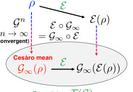
<figcaption class="paper-figure-caption"><b>Fig 1.</b> FIG. 1. RG as a quantum channel and its resource theory. (a) One RG step G = V ◦C coarse grains a state (C) and rescales it back to the original Hilbert space by an isometry (V). Iteration proceeds through the reduced map bG = C ◦V on the coarse-grained space. (b) Resource theory of RG. The Ces`aro mean G∞maps a UV state ρ to a fixed point in the set F(G) of free states (IR), even when the iterates Gn(ρ) do not converge. Free operations E commute with G∞and cannot increase the resource IG(ρ) = D(ρ∥G∞(ρ)).</figcaption>
</figure>
<figure class="paper-figure-card">
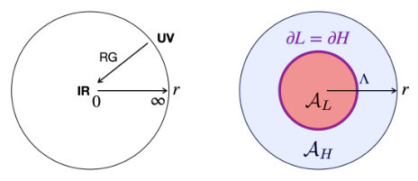
<figcaption class="paper-figure-caption"><b>Fig 2.</b> FIG. 2. Holographic setup on a time slice of global AdS3. Left: The radial coordinate r sets the RG scale, from the UV at r = r∞to the IR at r = rIR. Right: AL and AH are the algebras of L = {r ≤Λ} and its complement H, separated at the cutoff r = Λ.</figcaption>
</figure>
</div>

<p><strong>Summary.</strong> This work unifies the Renormalization Group concept using quantum information theory, treating RG as a quantum channel. It develops an algebraic framework for coarse-graining and establishes a resource theory where fixed points are free states. The authors derive key physical metrics, such as the BKM metric, using relative entropy, providing a rigorous mathematical toolset for analyzing critical phenomena across different physical regimes.</p>
<p><strong>Why it may be interesting.</strong> The rigorous connection between quantum information measures (relative entropy) and fundamental physical concepts like RG flow and thermal metrics (BKM) provides powerful new diagnostic tools for analyzing quantum many-body systems.</p>
<details>
<summary>Detailed structure</summary>
<p><strong>Main problem.</strong> The paper aims to formulate the Renormalization Group (RG) in a general quantum-information framework that extends beyond standard momentum-space, factorized settings, specifically addressing the information loss during coarse-graining.</p>
<p><strong>Main result.</strong> They develop an algebraic RG framework and construct a resource theory of RG, showing that the relative entropy monotone quantifies the distance from the IR fixed point, and they derive the BKM metric for thermal states.</p>
<p><strong>Method.</strong> The authors employ quantum information tools, treating RG as a quantum channel, defining the low-energy algebra via conditional expectation, and using relative entropy as a resource monotone.</p>
<p><strong>Model / system.</strong> The analysis applies to general quantum systems, including finite-dimensional ones, and models quantum field theories (QFTs) undergoing RG flow, particularly focusing on thermal states parameterized by couplings.</p>
<p><strong>Key observables.</strong> Relative entropy monotone ($I_G(
ho)$), BKM metric ($\chi_{ij}$), and the complementary measure of discarded UV information.</p>
<p><strong>Important parameters / regimes.</strong> Temperature ($eta$), coupling parameters ($g_i$), and the scale/momentum cutoff ($\Lambda$ or $u$).</p>
<p><strong>Assumptions / limitations.</strong> Assumptions include the existence of a low-energy algebra constructed from the one-particle spectrum and the use of specific functional forms for the relative entropy calculation.</p>
<p><strong>Figures summary.</strong> Figure 1 illustrates RG as a quantum channel (coarse-graining followed by rescaling) and its resource theory flow via the Cesàro mean.</p>
<p><strong>Paper structure.</strong> The paper progresses by first formulating the RG as a quantum channel (IRG), then developing an algebraic extension (ARG) using conditional expectation, establishing a resource theory, and finally deriving and comparing physical metrics like the BKM metric using relative entropy differentiation.</p>
</details>
<details>
<summary>Abstract</summary>
<p>Renormalization group (RG) is a core concept in physics from statistical mechanics to quantum field theory, yet its schemes differ widely between field theory and many-body physics. We formulate the Wilsonian RG as a quantum channel, whose Kraus representation yields pure conditional trajectories for pure inputs and recovers mixed-state flows upon averaging. We then develop an algebraic extension applicable beyond the usual momentum-space, factorized setting: the low-energy algebra is constructed from the one-particle spectrum, and coarse graining is a conditional expectation onto it. We further construct a resource theory of RG whose free states are fixed points. Under stated assumptions, the resulting relative-entropy monotone is proportional to $c-c_{\rm IR}$ to quadratic order along a single stable RG direction near a two-dimensional IR fixed point. We also introduce a complementary measure of the UV information discarded by coarse graining, establish its monotonicity for successive coarse-graining maps, and discuss its holographic realization.</p>
</details>
<p><sub><a href="#top">↑ back to top</a></sub></p>

<p><a id="paper-2609.30810"></a></p>
<h3 id="the-conductance-filtration-sink-relative-persistence-and-exact-edge-sensitivity-for-heat-transport-in-particle-filled-composites"><a href="http://arxiv.org/abs/2609.30810v1">The conductance filtration: sink-relative persistence and exact edge sensitivity for heat transport in particle-filled composites</a></h3>
<p><strong>Authors:</strong> Daisuke Yasufuku<br>
<strong>Type:</strong> theory · <strong>Category:</strong> disordered systems and neural networks · <strong>PDF:</strong> <a href="https://arxiv.org/pdf/2609.30810v1">https://arxiv.org/pdf/2609.30810v1</a><br>
<strong>Analysis basis:</strong> full PDF text, analyzed in chunks
<strong>Topic relevance:</strong> <code>Keldysh / 2PI / non-Gaussian methods</code> <strong>1/5</strong> · <code>analog quantum simulation</code> <strong>1/5</strong> · <code>correlated / nonlocal dissipation</code> <strong>1/5</strong> · <code>driven-dissipative phase transition</code> <strong>1/5</strong> · <code>methods for driven-dissipative</code> <strong>1/5</strong> · <code>non-equilibrium universality</code> <strong>1/5</strong></p>
<div class="figure-strip-hint">↔ Scroll figures horizontally</div>
<div class="paper-figures-scroll">
<figure class="paper-figure-card">
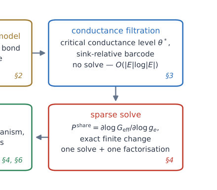
<figcaption class="paper-figure-caption"><b>Fig 1.</b> Figure 1: The design loop closes on a single graph representation. The four design variables of Section 1 enter on the left; the branch conductances, the conductance filtration and the dissipation share are computed on one graph; and the diagnosis returns to the design variables.</figcaption>
</figure>
<figure class="paper-figure-card">
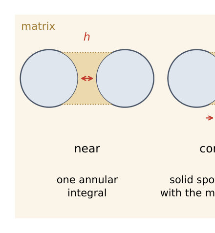
<figcaption class="paper-figure-caption"><b>Fig 2.</b> Figure 2: The three branch types. A pair separated only by a thin film of matrix (near-contact), a pair whose solids touch (contact), and a pair inside the same continuous solid (bond).</figcaption>
</figure>
<figure class="paper-figure-card">
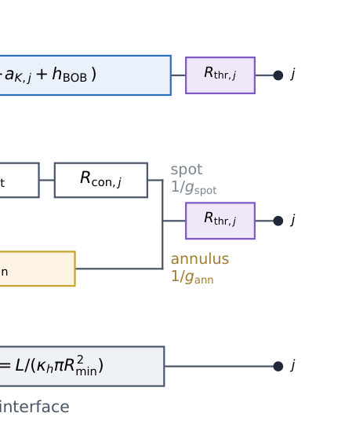
<figcaption class="paper-figure-caption"><b>Fig 3.</b> Figure 3: The thermal resistance network of each branch type, in the same order as the text. The through-particle resistance Rthr is in series with the whole edge, not inside the contact spot.</figcaption>
</figure>
<figure class="paper-figure-card">
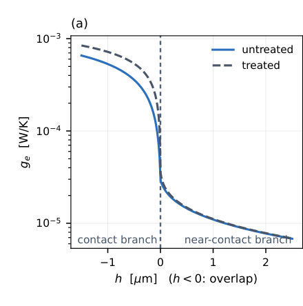
<figcaption class="paper-figure-caption"><b>Fig 4.</b> Figure 4: (a) ge against the surface separation h for a pair of equal spheres of diameter 20µm: the</figcaption>
</figure>
<figure class="paper-figure-card">
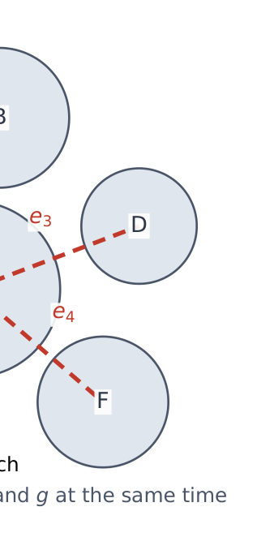
<figcaption class="paper-figure-caption"><b>Fig 5.</b> Figure 5: One edge carries three weights at once. The complex is fixed by the interaction cut-off; only the function on it is changed.</figcaption>
</figure>
</div>

<p><strong>Summary.</strong> This work develops a sophisticated mathematical framework to analyze heat transport in composite materials by treating the system's conductance through a 'conductance filtration'. It introduces the concept of dissipation share, which quantifies how much the overall heat flow is limited by specific physical mechanisms like particle interfaces or matrix bonds. This provides a powerful diagnostic tool for materials design.</p>
<p><strong>Why it may be interesting.</strong> While focused on thermal physics, the use of persistent homology (filtration, barcode) and sensitivity analysis (logarithmic derivatives) provides advanced mathematical tools applicable to characterizing complex, disordered energy landscapes in quantum systems.</p>
<details>
<summary>Detailed structure</summary>
<p><strong>Main problem.</strong> The paper aims to improve the understanding of thermal conductivity in particle-filled composites by moving beyond single effective quantity evaluations.</p>
<p><strong>Main result.</strong> It establishes that the dissipation share is exactly the logarithmic sensitivity of the effective conductance, providing a diagnostic tool to pinpoint the limiting heat transfer mechanism.</p>
<p><strong>Method.</strong> The authors introduce the conductance filtration, combining thermal conductance ($g_e$) as the filtration axis with persistence relative to the sink boundary.</p>
<p><strong>Model / system.</strong> The system modeled is particle-filled composites, where heat transport is analyzed by decomposing the conductance of particle pairs into three types: contact, near-contact, and bond.</p>
<p><strong>Key observables.</strong> Dissipation share ($   ext{P}_{    ext{share}}$), allocation of dissipation among branch types, and the idealisation ratio of each mechanism.</p>
<p><strong>Important parameters / regimes.</strong> Conductance ($g_e$), effective conductance ($G_{	ext{eff}}$), and the sink boundary conditions ($ ext{src},   ext{snk}$).</p>
<p><strong>Assumptions / limitations.</strong> The branch-conductance model assumes isothermal nodes, and the analysis relies on mapping the system onto a weighted graph structure.</p>
<p><strong>Figures summary.</strong> Figure 1 illustrates the entire 'design loop' closing on a single graph representation, linking structure, branch conductances, filtration, and diagnosis.</p>
<p><strong>Paper structure.</strong> The paper develops a framework by first formulating the thermal conductance using three branch types, then introducing the conductance filtration and sink-relative persistence, culminating in the derivation of the dissipation share and a closed-form prediction for edge sensitivity.</p>
</details>
<details>
<summary>Abstract</summary>
<p>We formulate the thermal conductance $g_e$ of a particle pair as three branch types -- contact, near-contact and bond -- within a single construction, and we introduce the filtration that takes this $g_e$ as its axis (the conductance filtration) together with persistence taken relative to the sink boundary. We then show that the dissipation share is exactly the logarithmic sensitivity of the effective conductance, and that a finite change of a single edge is predicted exactly in closed form. The allocation of the dissipation among branch types, and the idealisation ratio of each mechanism (interface, matrix and particle), are thereby obtained as diagnostic quantities on one and the same graph representation.</p>
</details>
<p><sub><a href="#top">↑ back to top</a></sub></p>

<p><a id="paper-2609.31085"></a></p>
<h3 id="2d-target-search-with-boundary-induced-resetting"><a href="http://arxiv.org/abs/2609.31085v1">2D target search with boundary-induced resetting</a></h3>
<p><strong>Authors:</strong> Kevin Chen, Paul C. Bressloff<br>
<strong>Type:</strong> theory · <strong>Category:</strong> statistical mechanics · <strong>PDF:</strong> <a href="https://arxiv.org/pdf/2609.31085v1">https://arxiv.org/pdf/2609.31085v1</a><br>
<strong>Analysis basis:</strong> full PDF text, analyzed in chunks
<strong>Topic relevance:</strong> <code>Keldysh / 2PI / non-Gaussian methods</code> <strong>1/5</strong> · <code>driven-dissipative phase transition</code> <strong>1/5</strong> · <code>methods for driven-dissipative</code> <strong>1/5</strong> · <code>non-equilibrium universality</code> <strong>1/5</strong> · <code>quantum measurements</code> <strong>1/5</strong></p>
<div class="figure-strip-hint">↔ Scroll figures horizontally</div>
<div class="paper-figures-scroll">
<figure class="paper-figure-card">
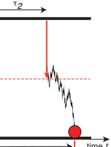
<figcaption class="paper-figure-caption"><b>Fig 1.</b> Figure 1. Schematic illustration of a sample path of a Brownian particle in [0, L] with a non-absorbing sticky boundary at x = L and an absorbing target at x = 0. The particle hits x = L twice prior to finding the target. In each case the particle sticks to the boundary for a random waiting time τj, j = 1, 2, after which it desorbs and immediately resets to its initial position x0.</figcaption>
</figure>
<figure class="paper-figure-card">
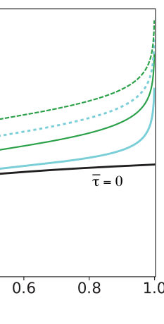
<figcaption class="paper-figure-caption"><b>Fig 2.</b> Figure 2. MFPT T(x0) given by equation (2.17) plotted on a log-scale with D, L = 1. The MFPT blows up as x0 →L for all τ &gt; 0.</figcaption>
</figure>
<figure class="paper-figure-card">
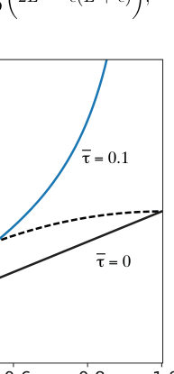
<figcaption class="paper-figure-caption"><b>Fig 3.</b> Figure 3. MFPT T(x0) with boundary resetting and a sticky boundary at x = L for various mean waiting times τ. The dashed curve shows the classical MFPT T0(x0) without resetting and a reflecting boundary at x = L. We take D = L = 1 in all cases so that τD = 1/2. It can be seen that for τ &lt; τD boundary resetting is advantageous in some part of the domain, but for τ &gt; τD, no choice of x0 makes boundary resetting worthwhile.</figcaption>
</figure>
<figure class="paper-figure-card">
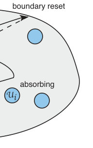
<figcaption class="paper-figure-caption"><b>Fig 4.</b> Figure 4. Particle diffusing in a singularly perturbed domain Ω⊂R2 containing N totally absorbing interior compartments Uj centred at the positions xj, j = 1, . . . , N. The particle resets to its initial position x0 whenever it desorbs from the exterior boundary ∂Ω.</figcaption>
</figure>
<figure class="paper-figure-card">
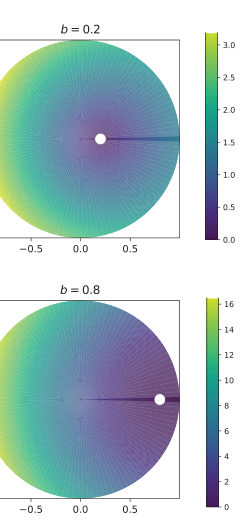
<figcaption class="paper-figure-caption"><b>Fig 5.</b> Figure 5. Polar contour plots of the MFPT T(x0; x1) given by equation (5.3) as a function of x0 = (a cos θ, a sin θ) for different target locations x1 = (b, 0) and τ = 0. The colouring of each plot is on a log-scale. Other parameters are D = 1 and ν = 0.2. Top left: b = 0; Top right: b = 0.3; Bottom left: b = 0.7; Bottom right: b = 0.95. The figure is generated using a discretization in polar coordinates, with a 50-point radial grid taken from 0.001 to 0.995, which accounts for singularities and blowups, and a 60-point angular grid taken from 0 to 2π.</figcaption>
</figure>
</div>

<p><strong>Summary.</strong> This paper analyzes the Mean First Passage Time for diffusion in a bounded 2D domain subjected to boundary-induced resetting. It compares this time to the case without resetting, showing that the benefit of resetting is highly dependent on the geometry and the proximity of the reset point to the target. The methodology combines renewal theory with advanced asymptotic analysis.</p>
<p><strong>Why it may be interesting.</strong> The study provides a rigorous theoretical framework for non-equilibrium dynamics in confined spaces, which is relevant for understanding transport phenomena in mesoscopic systems or engineered quantum environments.</p>
<details>
<summary>Detailed structure</summary>
<p><strong>Main problem.</strong> The paper investigates how boundary-induced resetting affects the Mean First Passage Time (MFPT) for a particle diffusing in a bounded 2D domain containing absorbing targets.</p>
<p><strong>Main result.</strong> Boundary-induced resetting only reduces the MFPT compared to a reflecting boundary if the particle's reset point is sufficiently close to the target(s), unlike some simpler 1D cases.</p>
<p><strong>Method.</strong> The analysis employs renewal theory, matched asymptotic expansions, and Green's functions to calculate the unconditional MFPT.</p>
<p><strong>Model / system.</strong> The model is single-particle diffusion in a 2D bounded domain ($\Omega$) with absorbing interior targets and a sticky exterior boundary ($\partial\Omega$) that causes resetting to a fixed interior point $x_0$.</p>
<p><strong>Key observables.</strong> Unconditional Mean First Passage Time (MFPT) for absorption by any target.</p>
<p><strong>Important parameters / regimes.</strong> The mean waiting time ($    au$) at the sticky boundary, the initial position ($x_0$), and the geometry of the domain ($\Omega$) and targets.</p>
<p><strong>Assumptions / limitations.</strong> Targets are assumed to be small and well-separated from each other and the exterior boundary; the analysis often relies on approximations for the leading order behavior.</p>
<p><strong>Figures summary.</strong> Figures illustrate contour plots showing the MFPT and the sign of the benefit function ($\chi$) for single and dumbbell target configurations in 2D, comparing resetting effects in 1D vs 2D.</p>
<p><strong>Paper structure.</strong> The paper first analyzes the simpler 1D interval case, then generalizes the methodology to the 2D domain $\Omega$, deriving the necessary renewal equations and calculating the MFPT using advanced mathematical techniques.</p>
</details>
<details>
<summary>Abstract</summary>
<p>Most studies of stochastic search processes with resetting focus on spontaneous resetting events that occur at a random sequence of times typically generated by a Poisson process. One of the major consequences of spontaneous resetting is that it yields a finite mean first passage time (MFPT) in unbounded domains, resulting in an optimal resetting rate that minimises the MFPT. An optimal resetting rate can also occur in bounded domains provided that the reset point is not too far from the target. Recently, there has been growing interest in event-based rather than spontaneous resetting, where resetting is triggered when a specific threshold is reached. Identifying the threshold with a physical non-target boundary then leads to so-called boundary-induced resetting. In this paper, we explore the effects of boundary-induced resetting on single-particle diffusive search in a two-dimensional (2D) bounded domain $Ω$ containing one or more small interior targets. The interior target boundaries are totally absorbing, whereas the exterior boundary $\partial Ω$ is sticky. That is, whenever the particle reaches a point on $\partial Ω$ it remains attached for a random waiting time $τ$ after which it immediately resets to a fixed interior point $\x_0\in Ω$. Using renewal theory, matched asymptotic analysis and Green's functions we calculate the unconditional MFPT for absorption by any of the targets and compare this with the corresponding MFPT of a search process on the same domain with a reflecting surface $\partial Ω$ and no resetting. We show that boundary-induced resetting only reduces the MFPT relative to the no resetting case if the searcher's reset point $\x_0$ is sufficiently close to one of the targets.</p>
</details>
<p><sub><a href="#top">↑ back to top</a></sub></p>

<p><a id="paper-2609.31462"></a></p>
<h3 id="gottesman-kitaev-preskill-error-correction-with-decohered-resources"><a href="http://arxiv.org/abs/2609.31462v1">Gottesman-Kitaev-Preskill error-correction with decohered resources</a></h3>
<p><strong>Authors:</strong> Rajendra S. Bhati, T. Bazylewicz, Jarosław K. Korbicz<br>
<strong>Type:</strong> theory · <strong>Category:</strong> quantum information and computing · <strong>PDF:</strong> <a href="https://arxiv.org/pdf/2609.31462v1">https://arxiv.org/pdf/2609.31462v1</a><br>
<strong>Analysis basis:</strong> full PDF text, analyzed in chunks
<strong>Topic relevance:</strong> <code>Keldysh / 2PI / non-Gaussian methods</code> <strong>1/5</strong> · <code>correlated / nonlocal dissipation</code> <strong>1/5</strong> · <code>methods for driven-dissipative</code> <strong>1/5</strong> · <code>quantum measurements</code> <strong>1/5</strong></p>
<div class="figure-strip-hint">↔ Scroll figures horizontally</div>
<div class="paper-figures-scroll">
<figure class="paper-figure-card">
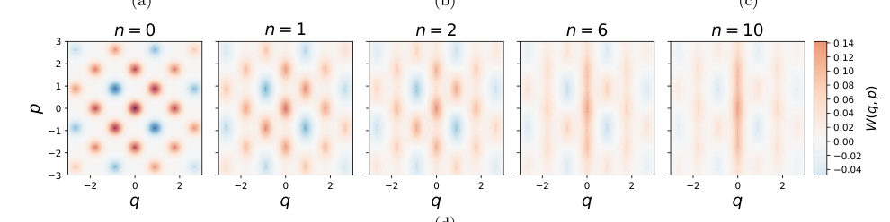
<figcaption class="paper-figure-caption"><b>Fig 1.</b> FIG. 1. (a) Leakage out of the GKP subspace as a function of successive GKP–EC rounds, averaged over the logical Pauli basis states for varying τ. Homodyne outcomes are fixed to (0, 0) in each round, so that no unitary correction is applied. (b) Uhlmann fidelity of teleportation as a function of the dimensionless time ωct for the input state |0β⟩, with homodyne outcomes (0, 0), for varying values of γT/ωc and a Lorentz–Drude cutoff, Eq. (7). The results for the exponential cutoff, Eq. (8), are qualitatively similar. (c) Leakage for the same parameters as in (b). (d) Wigner functions of the +1 eigenstate of the GKP Pauli operator ˆσy, with β = 0.1 and τ = 0.5, after n = 0, 1, 2, 6, 10...</figcaption>
</figure>
</div>

<p><strong>Summary.</strong> This work investigates the performance of GKP error correction when the necessary entangled ancillary resources suffer from environmental decoherence. The authors show that this decoherence transforms the error correction into a correlated noise process that causes the encoded quantum state to leak out of the logical subspace. This finding is critical for designing robust quantum computing architectures based on bosonic modes.</p>
<p><strong>Why it may be interesting.</strong> It provides a crucial, non-trivial extension to fault-tolerance theory by quantifying how realistic environmental noise fundamentally breaks the self-correcting nature of leading bosonic quantum error-correcting codes.</p>
<details>
<summary>Detailed structure</summary>
<p><strong>Main problem.</strong> The paper analyzes how environmental decoherence affects the Gottesman-Kitaev-Preskill (GKP) error-correction protocol, which typically assumes ideal ancillary resources.</p>
<p><strong>Main result.</strong> Under pure-dephasing, the GKP protocol degrades into a correlated Pauli-Gaussian noise process, meaning the code fails to self-correct and the encoded state leaks out of the logical subspace over successive rounds.</p>
<p><strong>Method.</strong> The analysis uses the Quantum Brownian Motion (QBM) model to derive the decoherence factor and the resulting noisy teleportation Kraus operator, quantifying leakage and fidelity degradation.</p>
<p><strong>Model / system.</strong> The system involves bosonic quantum states undergoing GKP error correction, modeled with a system-bath interaction Hamiltonian ($\hat{H}_{int}$) coupling to a bath of harmonic oscillators.</p>
<p><strong>Key observables.</strong> Leakage of the encoded state out of the logical subspace ($L_n$), and the Uhlmann fidelity ($F$) of the encoded state.</p>
<p><strong>Important parameters / regimes.</strong> Decoherence strength ($\gamma$), cutoff frequency ($\omega_c$), and the number of correction rounds ($n$).</p>
<p><strong>Assumptions / limitations.</strong> The decoherence is modeled using the QBM framework, focusing on the pure-dephasing limit, and the analysis assumes the ancillary states are subject to environmental noise.</p>
<p><strong>Figures summary.</strong> Figures illustrate the accumulation of leakage ($L_n$) versus the number of rounds, and the decay of Uhlmann fidelity and leakage versus dimensionless time for different environmental spectral densities.</p>
<p><strong>Paper structure.</strong> The paper first establishes the problem of decoherence in GKP-EC, derives the decoherence factor using QBM, characterizes the resulting noise as correlated Pauli-Gaussian noise, and finally demonstrates the failure of self-correction via leakage accumulation.</p>
</details>
<details>
<summary>Abstract</summary>
<p>Teleportation-based Gottesman-Kitaev-Preskill (GKP) error correction typically assumes a decoherence-free GKP ancilla Bell pair, an idealization that is difficult to reconcile with the ubiquitous environmental decoherence in bosonic systems. Here, we analyze the performance of the GKP protocol subject to pure-dephasing processes, ubiquitous in realistic situations. We show that, under this class of interactions, teleportation, instead of projecting the input onto the GKP subspace, transforms GKP error correction into a correlated Pauli-Gaussian noise process that can accumulate over successive correction rounds. Thus, unlike in previously studied noisy GKP scenarios, the code no longer self-corrects. Moreover, repeated noisy GKP teleportation drives the encoded modes out of the logical subspace, progressively degrading the encoded codewords. We show that the resulting leakage rapidly saturates with the number of correction rounds. Finally, we investigate the implications of our results for motional-oscillator-based GKP error-correction platforms.</p>
</details>
<p><sub><a href="#top">↑ back to top</a></sub></p>

<p><a id="paper-2609.31027"></a></p>
<h3 id="when-can-quantum-extreme-learning-machines-replace-quantum-reservoirs"><a href="http://arxiv.org/abs/2609.31027v1">When Can Quantum Extreme Learning Machines Replace Quantum Reservoirs?</a></h3>
<p><strong>Authors:</strong> Markus Baumann, Gerhard Stenzel, Jonas Stein, Claudia Linnhoff-Popien<br>
<strong>Type:</strong> theory · <strong>Category:</strong> disordered systems and neural networks · <strong>PDF:</strong> <a href="https://arxiv.org/pdf/2609.31027v1">https://arxiv.org/pdf/2609.31027v1</a><br>
<strong>Analysis basis:</strong> full PDF text, analyzed in chunks
<strong>Topic relevance:</strong> <code>analog quantum simulation</code> <strong>1/5</strong> · <code>correlated / nonlocal dissipation</code> <strong>1/5</strong> · <code>driven-dissipative phase transition</code> <strong>1/5</strong> · <code>methods for driven-dissipative</code> <strong>1/5</strong></p>
<div class="figure-strip-hint">↔ Scroll figures horizontally</div>
<div class="paper-figures-scroll">
<figure class="paper-figure-card">
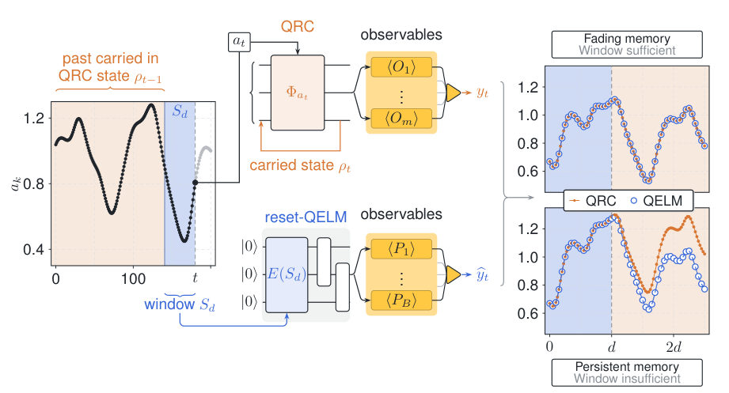
<figcaption class="paper-figure-caption"><b>Fig 1.</b> Figure 1: Two ways to provide memory: the QRC carries its quantum state forward, while the reset-QELM receives a window of recent inputs. Right: an old input leaves the window at the dashed line. Above, its influence has vanished by then, so the curves stay identical. Below, its influence becomes more visible and a gap remains. Orange denotes the QRC; blue denotes an ideal window prediction. These are schematic examples, not trained-model results: time advances while the window length stays fixed (Section 2). Here E encodes the window, O j and Pj are measured observables, m and B count QRC outputs and QELM features, and k indexes inputs while t marks the current step.</figcaption>
</figure>
<figure class="paper-figure-card">
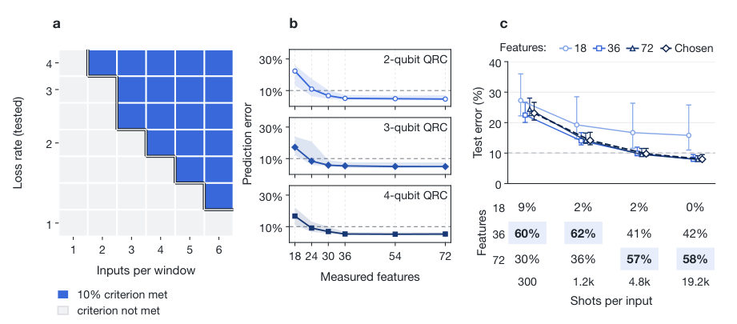
<figcaption class="paper-figure-caption"><b>Fig 2.</b> Figure 2: Three resources, three different questions. a Blue windows meet the 10% old-history criterion in all three target sizes; gray windows do not. Rows show tested loss rates ≥1; lower rates also fail. b More features help, with little improvement beyond 36. c Test error falls with more shots; diamonds use validation-selected feature counts. Points are offset within shot tiers; the horizontal dashed line marks 10% error. Lower percentages summarize 192 pre-test validation choices per tier (12 roots, 16 repeats), rounded; bold marks the most frequent count. Errors are sampled NRMSE percentages, not worst-case bounds. Medians and 10th–90th percentiles (bands in b, whiskers in c) describe...</figcaption>
</figure>
<figure class="paper-figure-card">
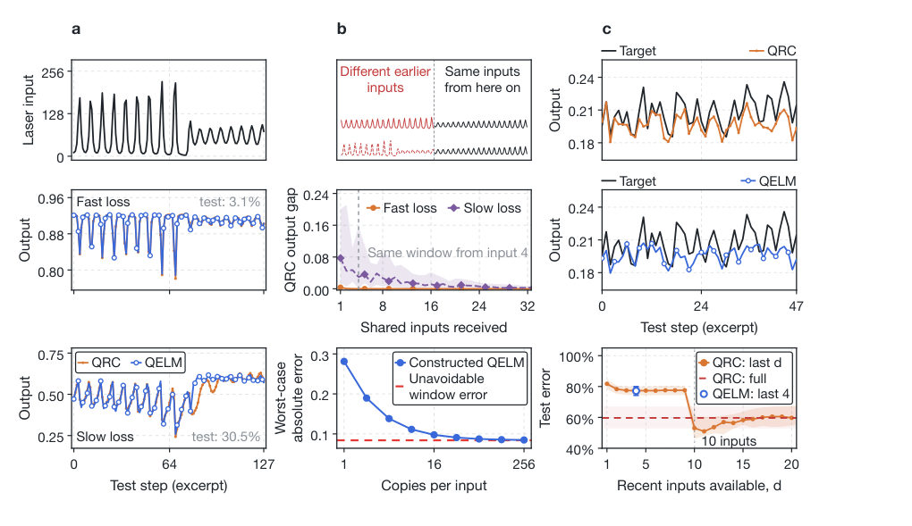
<figcaption class="paper-figure-caption"><b>Fig 3.</b> Figure 3: Memory in emulation and prediction. a Faster forgetting improves QELM emulation of laser-driven QRC (full- test NRMSE labelled; differing output scales), not laser forecasting. b Distinct pasts receive identical continuations (top). Constructed QELMs approach the red analytical window-error floor without readout training (bottom), not a laser/NARMA bound. c Synthetic NARMA10 traces share output scales. Replay resets the same QRC on its last d inputs and refits its readout at every d = 1,...,48 (displayed: 1–20), costing extra evolution. Red dashes: empirical full-history QRC reference, not a floor; blue: QELM(4). Medians and 10th–90th root percentiles (12 roots/loss in b; 24 in...</figcaption>
</figure>
</div>

<p><strong>Summary.</strong> This work determines the precise conditions under which a memory-limited Quantum Extreme Learning Machine can replace a quantum reservoir computer. The central finding is that perfect emulation requires the influence of the omitted past history to vanish uniformly, establishing a fundamental limit on what finite-window models can reconstruct about a system's true history.</p>
<p><strong>Why it may be interesting.</strong> It provides a rigorous theoretical boundary for using machine learning models (QELMs) to simulate physical systems with inherent memory (QRCs), which is crucial for understanding the limits of quantum machine learning in physics.</p>
<details>
<summary>Detailed structure</summary>
<p><strong>Main problem.</strong> The paper investigates the fundamental conditions under which a memory-less Quantum Extreme Learning Machine (QELM) can accurately emulate the temporal memory retention capabilities of a Quantum Reservoir Computer (QRC).</p>
<p><strong>Main result.</strong> Accurate emulation is possible if and only if the influence of the omitted past history becomes uniformly negligible as the input window grows, otherwise, a persistent error floor remains regardless of model capacity.</p>
<p><strong>Method.</strong> The analysis compares the QRC output to the QELM prediction by quantifying the worst-case output variation ($D_d$) when the input window is fixed but the past history varies.</p>
<p><strong>Model / system.</strong> The models involve quantum reservoir dynamics (QRC) and reset-window QELMs operating on quantum states ($
ho_t$). The dynamics are governed by input-dependent Hamiltonians and local dissipation terms.</p>
<p><strong>Key observables.</strong> The primary observable is the error floor $D_d$, which quantifies the output variation due to missing history; other observables include the trace distance ($   ext{D}<em ext_vis="ext{vis">{    ext{tr}}$) and the joint spectral radius ($ ext{r}</em>$).}</p>
<p><strong>Important parameters / regimes.</strong> Window length ($d$), the decay rate characterized by $  ext{r}_{    ext{vis}}$, and the error tolerance ($\epsilon$).</p>
<p><strong>Assumptions / limitations.</strong> The analysis assumes exact expectation values and focuses on the theoretical limits of representation capability, distinguishing this from practical training efficiency.</p>
<p><strong>Figures summary.</strong> Figure 1 schematically compares QRC memory retention (state evolution) versus QELM window usage, illustrating cases where memory influence vanishes versus where a gap persists.</p>
<p><strong>Paper structure.</strong> The paper establishes the theoretical framework by defining the memory difference between QRCs and QELMs, deriving the necessary condition for emulation ($    ext{D}_d    o 0$), and then providing rigorous bounds and counterexamples using specific quantum models.</p>
</details>
<details>
<summary>Abstract</summary>
<p>Quantum reservoir computers (QRCs) retain information from earlier inputs, whereas reset-window quantum extreme learning machines (QELMs) start afresh and receive only a recent input window. We establish when this window can replace the reservoir's memory. Under our stated assumptions and with exact expectation values, sufficiently expressive QELMs can reproduce reservoir outputs arbitrarily accurately as their windows grow precisely when the influence of the omitted past becomes uniformly negligible. However, longer windows do not always solve the problem. We construct a simple two-qubit reservoir that performs temporal recall exactly, while every fixed-window predictor faces the same positive worst-case error over unbounded delays, regardless of model capacity. Analytical benchmarks and simulations distinguish missing history from limited features and finite measurements. The central conclusion is simple: better representations can improve how available information is used, but cannot recover a past the model never receives.</p>
</details>
<p><sub><a href="#top">↑ back to top</a></sub></p>

<p><a id="paper-2609.31171"></a></p>
<h3 id="modern-triad-for-magnetic-material-science-geometric-shape-electronic-bands-and-spin-textures"><a href="http://arxiv.org/abs/2609.31171v1">Modern triad for magnetic material science: geometric shape, electronic bands and spin textures</a></h3>
<p><strong>Authors:</strong> Denys Makarov, Oleksandr Pylypovskyi, Rui Xu, Carmine Ortix<br>
<strong>Type:</strong> theory · <strong>Category:</strong> other · <strong>PDF:</strong> <a href="https://arxiv.org/pdf/2609.31171v1">https://arxiv.org/pdf/2609.31171v1</a><br>
<strong>Analysis basis:</strong> full PDF text, analyzed in chunks
<strong>Topic relevance:</strong> <code>Keldysh / 2PI / non-Gaussian methods</code> <strong>1/5</strong> · <code>analog quantum simulation</code> <strong>1/5</strong> · <code>quantum measurements</code> <strong>1/5</strong></p>
<div class="figure-strip-hint">↔ Scroll figures horizontally</div>
<div class="paper-figures-scroll">
<figure class="paper-figure-card">
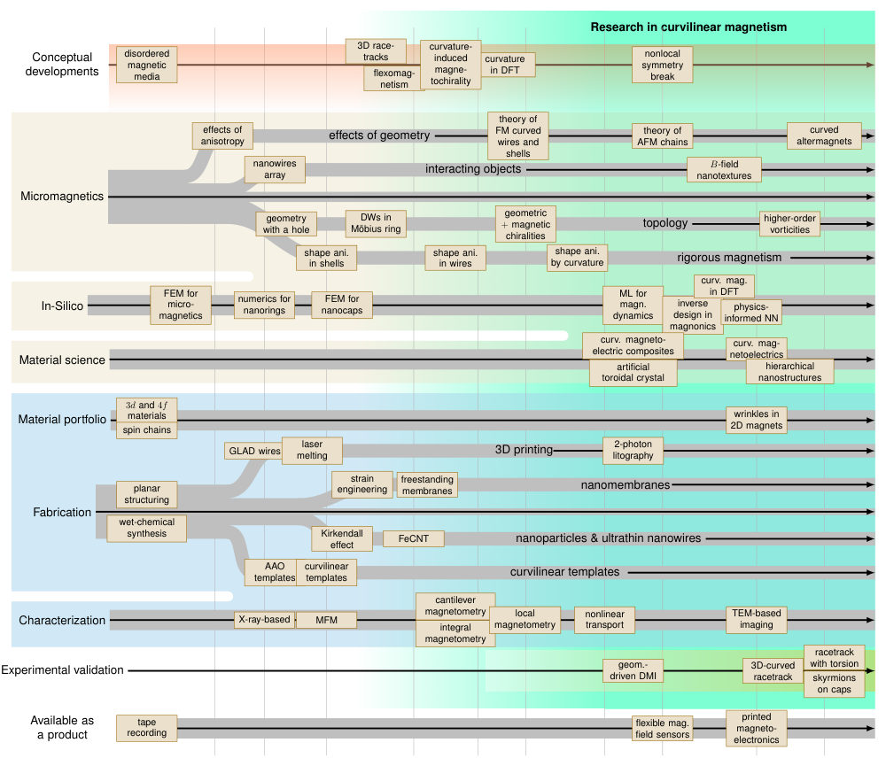
<figcaption class="paper-figure-caption"><b>Fig 1.</b> FIG. 1. Research timeline of curvilinear magnetism. Numerous works on micromagnetics [17–29], in-silico research [30– 37], material science development [38–41] and experimental techniques [42–59] have been supplemented by the conceptual developments in solid state [60–66] and entering market. Up to now, several theoretical predictions have been validated experimentally [12, 67–69]. Abbreviations used: DFT (density functional theory), DWs (domain walls), FEM (finite-element mesh), ML (machine learning), GLAD (glancing-angle deposition), AAO (anode aluminum oxide), MFM (magnetic force microscopy), TEM (transition electron microscopy).</figcaption>
</figure>
<figure class="paper-figure-card">
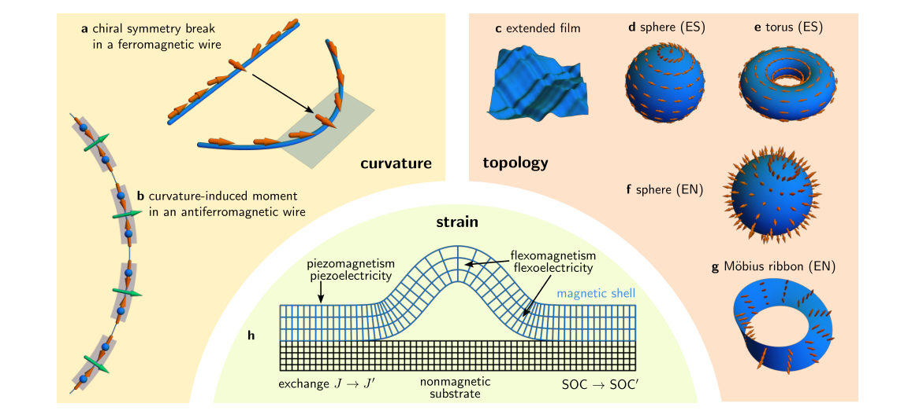
<figcaption class="paper-figure-caption"><b>Fig 2.</b> FIG. 2. Components of construction of a curvilinear magnet: (a,b) geometric curvatures, (c–g) topology and (h) strain. (a) In a strain ferromagnetic wire chirality (magnetization direction shown by orange arrows) of a head- to-head domain wall is arbitrary. In a bent sample, the geometry-driven anisotropy fixes magnetization in the plane of bend (semitransparent blue plane), and gDMI fixes the outward chirality. (b) Schematics of the geometry-induced magnetic uncompensation per dimer (green arrows, not in scale) in an antiferromagnetic spin chain when magnetic moments (orange arrows) are tangential to the chain. (c) In comparison with an extended magnetically soft film, (d) topology of a...</figcaption>
</figure>
<figure class="paper-figure-card">
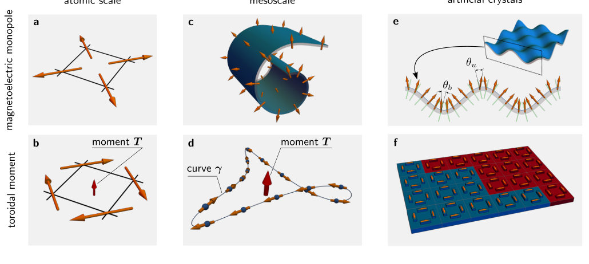
<figcaption class="paper-figure-caption"><b>Fig 3.</b> FIG. 3. Magnetoelectric monopoles (a,c,e) and toroidal moments (b,d,f) at different length scales. Atomic scale ordering of the (a) magnetoelectric monopole A (pseudoscalar) and (b) toroidal moment T at the square lattice formed by magnetic moments (orange arrows). (c) Rolled-up thin magnetoelectric film with the out-of-plane anisotropy has a finite monopolar moment in addition to non-extensive toroidal moment (here and in the following panels, magnetization direction is shown by orange lines). (d) A ferromagnetic spin chain arranged along a closed space curve γ with the easy magnetic axis along tangential direction of γ forms a finite toroidal moment T perpendicular to the chain’s plane...</figcaption>
</figure>
<figure class="paper-figure-card">
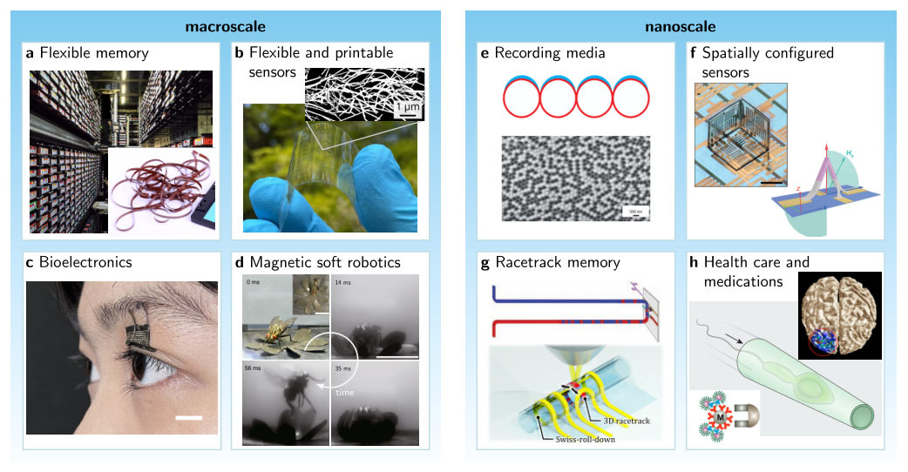
<figcaption class="paper-figure-caption"><b>Fig 4.</b> FIG. 4. Representative applications of curvilinear magnetic architectures in functional devices, spanning from macroscopic implementations (a–d) to nanoscale systems (e–h). (a) Commercial magnetic tapes realized through flexible magnetic substrates, illustrating large-scale utility of curved architectures. (b) Printable magnetoresistive sensors based on aligned nanowires, featuring mechanical flexibility and optical transparency, positioning them as potential candidates for wearable electronics. (c) Mechanically adaptive biosensors for precise decoding of fatigue levels. (d) Soft robotic actuators exhibiting ultrafast mechanical response through integration of magnetic composites. (e)...</figcaption>
</figure>
<figure class="paper-figure-card">
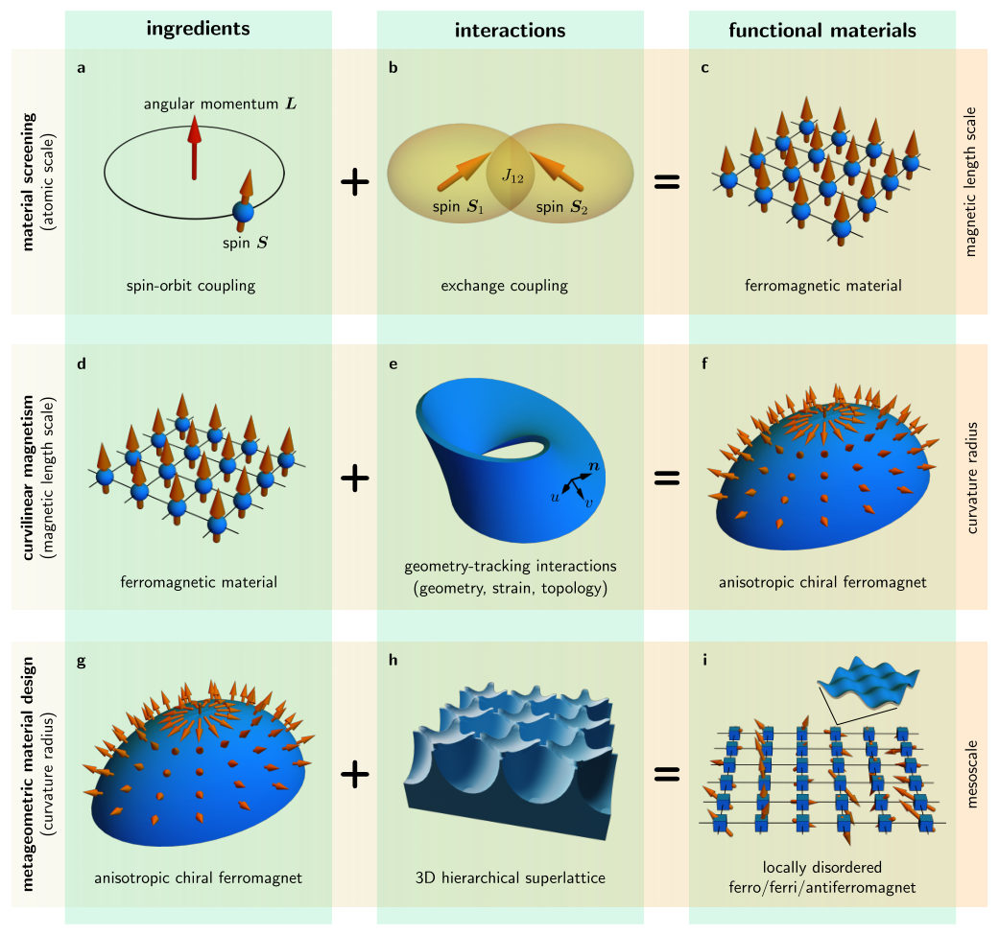
<figcaption class="paper-figure-caption"><b>Fig 5.</b> FIG. 5. Approaches in material science from the atomic to mesoscale. A classical methodology relies on (a) the design of the local atomic environment and (b) coupling between spins to achieve (c) the magnetic material with the desired properties. This material, e.g. specific ferromagnet serves as (d) the ingredient for the modern field of curvilinear magnetism. (e) Using toolbox that includes geometry-tracking interactions (shape anisotropy, strain and others) for the sample with the specific topology and geometry, (f) the anisotropic chiral ferromagnet that could host, e.g., curvature-stabilized skyrmions, is obtained. Intrinsically, the material remains the same. Future of curvilinear...</figcaption>
</figure>
</div>

<p><strong>Summary.</strong> This review outlines a modern framework for designing 'metageometric' materials by simultaneously considering the interplay between a material's physical shape, its electronic band structure, and its magnetic spin textures. It moves beyond simple micromagnetics by incorporating geometric constraints and strain effects, promising new avenues for energy-efficient nanoelectronics and sensing.</p>
<p><strong>Why it may be interesting.</strong> While primarily condensed matter/materials science, the explicit coupling between geometry (topology/curvature) and quantum-like order parameters (magnetization) echoes concepts in geometric phases and topological quantum matter, which are relevant to AMO physics.</p>
<details>
<summary>Detailed structure</summary>
<p><strong>Main problem.</strong> The paper addresses the need to design novel functional materials by coupling three fundamental aspects: geometric shape, electronic band structure, and magnetic spin textures.</p>
<p><strong>Main result.</strong> It proposes that accounting for the explicit coupling between geometry, strain, and electronic degrees of freedom allows for the design of 'metageometric' materials with controlled anisotropic and chiral responses.</p>
<p><strong>Method.</strong> The review synthesizes concepts from differential geometry, mean-field micromagnetics, and solid-state physics to model these coupled effects.</p>
<p><strong>Model / system.</strong> The focus is on thin magnetic shells and curved geometries (e.g., bent shells, N-tori), where the local magnetic order parameter is influenced by the manifold's curvature and induced strain.</p>
<p><strong>Key observables.</strong> Curvature-induced anisotropy, topological constraints on magnetization (soliton number), magnetoelectric coupling, and strain-gradient effects.</p>
<p><strong>Important parameters / regimes.</strong> Nanoscale dimensions, curvature ($\kappa_u, \kappa_v$), strain ($\epsilon_{ij}$), and topological invariants.</p>
<p><strong>Assumptions / limitations.</strong> The review extends beyond contemporary mean-field micromagnetics to incorporate lattice structure and electronic degrees of freedom, though strain gradient effects are noted as areas for further development.</p>
<p><strong>Figures summary.</strong> Figures illustrate the historical development of curvilinear magnetism, geometric curvatures, and the topological constraints on magnetization fields in various curved geometries.</p>
<p><strong>Paper structure.</strong> The review progresses from defining the limitations of current micromagnetics to detailing the mathematical framework using differential geometry, and finally outlining the resulting novel physical phenomena and technological prospects.</p>
</details>
<details>
<summary>Abstract</summary>
<p>To enable novel concepts in nanotechnologies, it is insightful to design materials with qualitatively new performances originating from recent discoveries in fundamental material science and physics. Curvilinear magnetism emerged as a tool to design chiral and anisotropic responses of materials at the nanoscale using the effects of the geometric shape and topology of the object. This concept is distinct yet complementary to material screening, which is primarily based on the optimization of intrinsic microscopic properties to modify magnetic textures for specific applications. Contemporary curvilinear magnetism focuses on mean-field micromagnetics, while the explicit contribution of the lattice structure and electronic degrees of freedom remains beyond consideration. In this review, we will emphasize on the effects which appear when this coupling is accounted for and that have resulted in novel concepts for the design of ``metageometric'' materials. Further development of this field will provide appealing technological prospects for fundamental understanding of curvilinear magnetic nanostructures and their applications in energy efficient and scalable nanoelectronics.</p>
</details>
<p><sub><a href="#top">↑ back to top</a></sub></p>

<p><a id="paper-2609.30875"></a></p>
<h3 id="quantum-circuit-simulation-of-three-flavor-neutrino-oscillations-vacuum-matter-and-cp-diagnostics"><a href="http://arxiv.org/abs/2609.30875v1">Quantum-circuit simulation of three-flavor neutrino oscillations: vacuum, matter, and CP diagnostics</a></h3>
<p><strong>Authors:</strong> Daming Li<br>
<strong>Type:</strong> theory · <strong>Category:</strong> quantum information and computing · <strong>PDF:</strong> <a href="https://arxiv.org/pdf/2609.30875v1">https://arxiv.org/pdf/2609.30875v1</a><br>
<strong>Analysis basis:</strong> full PDF text, analyzed in chunks
<strong>Topic relevance:</strong> <code>correlated / nonlocal dissipation</code> <strong>1/5</strong> · <code>driven-dissipative phase transition</code> <strong>1/5</strong> · <code>methods for driven-dissipative</code> <strong>1/5</strong></p>
<div class="figure-strip-hint">↔ Scroll figures horizontally</div>
<div class="paper-figures-scroll">
<figure class="paper-figure-card">
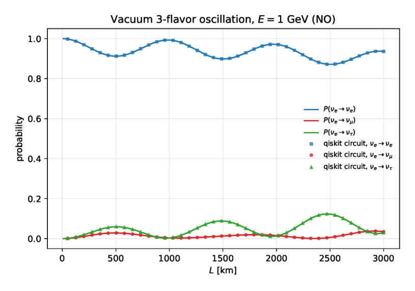
<figcaption class="paper-figure-caption"><b>Fig 1.</b> Figure 1: Vacuum three-flavor oscillation at E = 1 GeV. Solid curves: analytic Pα→β from Eq. (17); markers: Qiskit two-qubit circuit (statevector).</figcaption>
</figure>
<figure class="paper-figure-card">

<figcaption class="paper-figure-caption"><b>Fig 2.</b> Figure 2: Suzuki–Trotter convergence for the vacuum evolution (L = 500 km, E = 1 GeV). Markers: measured εU(N) for p = 1, 2; dotted lines: expected N −p slopes.</figcaption>
</figure>
<figure class="paper-figure-card">
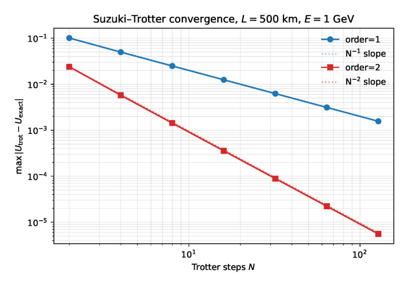
<figcaption class="paper-figure-caption"><b>Fig 3.</b> Figure 3 shows P(νe →νe) at L = 2000 km, E = 1 GeV as a function of the matter potential A. Here the Hamiltonian is H = Hvac + A diag(1, 0, 0) with constant A from (Eq. 8) and Eq. (9). A sharp suppression of ee survival develops as A approaches ∆m2 31, signalling an MSW resonance that converts νe into νµ, ντ. Numerically the minimum is P(νe →νe) ≃0.08 at Amin ≃2.4 × 10−3 eV2, to be compared with the atmospheric splitting ∆m2 31 = 2.517×10−3 eV2; the positional agreement confirms that this is the νe–νµ/τ (resonant) conversion driven</figcaption>
</figure>
<figure class="paper-figure-card">
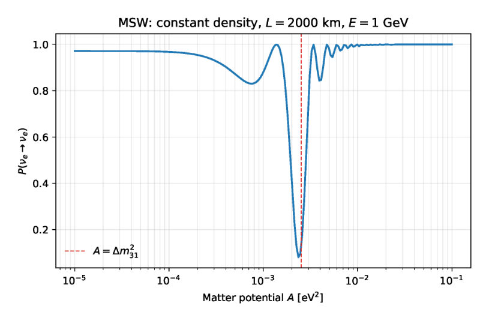
<figcaption class="paper-figure-caption"><b>Fig 4.</b> Figure 3: Constant-density MSW: P(νe →νe) versus A at L = 2000 km, E = 1 GeV. Dashed line marks A = ∆m2 31.</figcaption>
</figure>
<figure class="paper-figure-card">

<figcaption class="paper-figure-caption"><b>Fig 5.</b> Figure 4 displays the flavor probabilities of a 50 MeV neutrino traversing an exponentially decreasing density profile mimicking a supernova shock shell. The Hamiltonian is H(r) = Hvac + A(r) diag(1, 0, 0) with matter potential A(r) = A0 e−r/r0, r0 = 0.15 L, L = 500 km (peak value A0 = 2.537×10−28nmax e E with nmax e = 6×1025</figcaption>
</figure>
</div>

<p><strong>Summary.</strong> This work develops a quantum circuit simulation framework to model three-flavor neutrino oscillations under various physical conditions, including vacuum, matter effects, and decoherence. It rigorously verifies the simulation against known analytical results while also calculating quantum information diagnostics like entanglement and CP asymmetry. The paper establishes a reproducible quantum pipeline connecting particle physics observables to quantum information theory.</p>
<p><strong>Why it may be interesting.</strong> The explicit use of quantum circuits to model fundamental particle physics processes, combined with the calculation of quantum information measures, provides a novel computational bridge between particle physics phenomenology and quantum information theory.</p>
<details>
<summary>Detailed structure</summary>
<p><strong>Main problem.</strong> The paper simulates three-flavor neutrino oscillations across various astrophysical environments (vacuum, matter, supernova) using quantum circuits.</p>
<p><strong>Main result.</strong> The quantum circuit framework successfully reproduces analytical results for oscillation probabilities and establishes a quantitative link between low-energy oscillation observables and quantum-information measures like mode entanglement and CP asymmetry.</p>
<p><strong>Method.</strong> The evolution is simulated by encoding the flavor space into a two-qubit system and applying time evolution via quantum circuits, utilizing Suzuki-Trotter splitting for time discretization.</p>
<p><strong>Model / system.</strong> The system is three-flavor neutrino oscillation governed by a Hamiltonian that includes vacuum terms and density-dependent matter potentials. The simulation is extended to open quantum systems using a Lindblad master equation.</p>
<p><strong>Key observables.</strong> Oscillation probabilities ($P_{\alpha	oeta}$), mode entanglement (Concurrence), and CP asymmetry ($\Delta P$).</p>
<p><strong>Important parameters / regimes.</strong> NuFIT 5.3 parameters, matter potential $A(r)$, and simulation parameters like Trotter order and step number.</p>
<p><strong>Assumptions / limitations.</strong> The $|	ext{11}
angle$ sector is assumed inert, and the simulation uses a minimal two-qubit encoding, excluding neutrino-neutrino self-interactions.</p>
<p><strong>Figures summary.</strong> Figures illustrate the successful reproduction of vacuum oscillation results to high precision, the resonance behavior in MSW matter, and the convergence rates of the Trotter approximation.</p>
<p><strong>Paper structure.</strong> The paper systematically verifies the simulation across three regimes: vacuum propagation, constant-density MSW matter, and varying-density supernova shock-shell propagation. It then extends the model to include quantum information diagnostics and open-system decoherence.</p>
</details>
<details>
<summary>Abstract</summary>
<p>We simulate three-flavor neutrino oscillations on two-qubit quantum circuits. The flavor space is embedded as $\ket{00}=ν_e$, $\ket{01}=ν_μ$, $\ket{10}=ν_τ$ with the $\ket{11}$ channel kept inert, and the input mixing parameters (NuFIT~5.3, normal ordering) follow the global fit. We verify three physical settings against analytic or exact references: vacuum propagation, reproduced by a mass-eigenstate phase circuit to $\sim 10^{-16}$; constant-density Mikheev--Smirnov--Wolfenstein (MSW) matter effects, showing resonant flavor conversion when the matter potential $A$ crosses $Δm^2_{31}$; and varying-density (supernova shock-shell) propagation by slicing plus second-order Suzuki--Trotter splitting, agreeing with exact evolution to $\sim 10^{-6}$. We report a Suzuki--Trotter precision--resource calibration varying order, step number, and matrix/probability error. It delimits brute-force Trotterization on solar baselines: we quantify both standard alternatives, coherence averaging and adiabatic MSW. We also compute quantum-information diagnostics from the same model parameters, namely mode entanglement and the CP asymmetry. Finally, we extend the framework to open quantum systems via a Lindblad master equation with dephasing and absorptive channels. These results provide a reproducible link between low-energy oscillation observables and quantum-information measures.</p>
</details>
<p><sub><a href="#top">↑ back to top</a></sub></p>

<p><a id="paper-2609.31344"></a></p>
<h3 id="the-memory-equation-of-a-characteristic-function-in-surface-diffusion-a-sum-rule"><a href="http://arxiv.org/abs/2609.31344v1">The memory equation of a characteristic function in surface diffusion: a sum rule</a></h3>
<p><strong>Authors:</strong> S. Miret-Artés<br>
<strong>Type:</strong> theory · <strong>Category:</strong> statistical mechanics · <strong>PDF:</strong> <a href="https://arxiv.org/pdf/2609.31344v1">https://arxiv.org/pdf/2609.31344v1</a><br>
<strong>Analysis basis:</strong> full PDF text, analyzed in chunks
<strong>Topic relevance:</strong> <code>Keldysh / 2PI / non-Gaussian methods</code> <strong>1/5</strong> · <code>correlated / nonlocal dissipation</code> <strong>1/5</strong> · <code>methods for driven-dissipative</code> <strong>1/5</strong></p>
<div class="figure-strip-hint">↔ Scroll figures horizontally</div>
<div class="paper-figures-scroll">
<figure class="paper-figure-card">
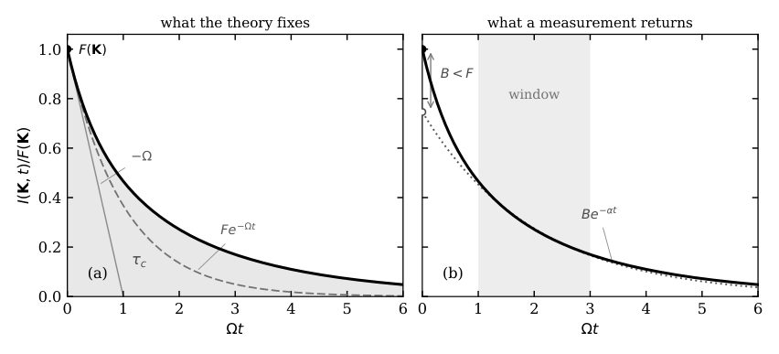
<figcaption class="paper-figure-caption"><b>Fig 1.</b> Figure 1: The two sets of quantities, drawn on one and the same decay and described in the text. The solid curve is the exact intermediate scattering function of an admissible relaxation spectrum, chosen arbitrarily and normalized so that Ω= 1; it stands for any admissible decay, no model of the adlayer entering it. The origin of the time is that of the diffusive regime, the motion within a well having been averaged over. (a) What the theory fixes, the shaded area being the correlation time τc(K). (b) What a measurement returns, over the window shown.</figcaption>
</figure>
</div>

<p><strong>Summary.</strong> This paper develops a rigorous theoretical framework to describe the decay dynamics of density waves in adlayers using the Mori-Zwanzig formalism. It establishes an exact memory equation and a corresponding sum rule that connects the measured decay rate to static structural properties and single-jump probabilities. This framework successfully predicts the known hydrodynamic limit (Darken relation) while remaining general for various interaction models.</p>
<p><strong>Why it may be interesting.</strong> The rigorous derivation of transport relations (like the Darken relation) from fundamental memory function theory, applicable to many systems exhibiting diffusive dynamics, provides a powerful theoretical tool for analyzing relaxation spectra.</p>
<details>
<summary>Detailed structure</summary>
<p><strong>Main problem.</strong> Deriving an exact memory equation for the decay of a density wave in an interacting adlayer and establishing a general sum rule governing the local rate.</p>
<p><strong>Main result.</strong> The local rate obeys a sum rule relating its momentum dependence to the single-jump characteristic function and the static structure factor. In the hydrodynamic limit, this reduces to a Darken-type relation.</p>
<p><strong>Method.</strong> The theory employs the Mori-Zwanzig projection formalism to derive the memory equation, utilizing detailed balance and equilibrium averages to constrain the coefficients.</p>
<p><strong>Model / system.</strong> The system is an adlayer undergoing surface diffusion on a crystal surface, modeled by dynamics governed by a master equation for the pair correlation function.</p>
<p><strong>Key observables.</strong> Intermediate Scattering Function (ISF), Static Structure Factor (SSF), Local Rate, Effective Hop Rate, and the ratio $R(K)$ derived from moment analysis.</p>
<p><strong>Important parameters / regimes.</strong> Wavevector $K$, correlation time $  au_c$, and the long-wavelength limit ($K    o 0$).</p>
<p><strong>Assumptions / limitations.</strong> The dynamics must satisfy conservation, fixed jump sets, detailed balance, and translational invariance (H1-H4).</p>
<p><strong>Figures summary.</strong> Not specified, but the notes reference a Table 1 showing measured values for amplitude, rate, and other diagnostic quantities across various wavevectors.</p>
<p><strong>Paper structure.</strong> The paper builds from the general Mori equation for the ISF, derives the sum rule connecting the decay rate to single-jump correlations, and then analyzes the long-wavelength limit to recover known transport relations like the Darken equation.</p>
</details>
<details>
<summary>Abstract</summary>
<p>The decay of a density wave in an interacting adlayer obeys an exact memory equation of Mori's form. Being a Fourier component of a conserved density, its correlation function is a characteristic function, and the kernel is built from a second one, that of a single jump. The local rate obeys a sum rule whose momentum dependence is one minus the characteristic function of a single jump, divided by the static structure factor. Detailed balance makes the decay a superposition of relaxation modes of non-negative weight whose moments are static equilibrium averages, so that the truncations of the associated continued fraction form a convergent hierarchy of closed forms, each of them a bound on the decay itself. The single rate a fit returns is shown to be the mean of the instantaneous rate over a time window, hence never above the local rate. At long wavelength, the two coincide, the relaxation spectrum separating there, one collective mode taking almost the whole weight of the density wave and the single exponential usually fitted to spin-echo data being the decay itself. What an experiment reaches at every wavevector is also the area under the decay, a correlation time. Together with the static structure factor and the single-jump geometry, it forms one combination which the theory identifies with the effective hop rate divided by the product of the local rate and the correlation time. That product never falls below unity and tends to unity at long wavelength whenever the rate at which an adparticle leaves a site is independent of the site it leaves for. In the hydrodynamic limit, the sum rule becomes a relation of Darken type in which the rate multiplied by the thermodynamic factor is the effective hop rate and not the mobility of a labelled adparticle.</p>
</details>
<p><sub><a href="#top">↑ back to top</a></sub></p>

<p><a id="paper-2609.30385"></a></p>
<h3 id="colored-weingarten-calculus-for-block-unitary-ensemble"><a href="http://arxiv.org/abs/2609.30385v1">Colored Weingarten Calculus for Block-Unitary Ensemble</a></h3>
<p><strong>Authors:</strong> Daniele Iannotti, Elisa Vallini<br>
<strong>Type:</strong> theory · <strong>Category:</strong> statistical mechanics · <strong>PDF:</strong> <a href="https://arxiv.org/pdf/2609.30385v1">https://arxiv.org/pdf/2609.30385v1</a><br>
<strong>Analysis basis:</strong> full PDF text, analyzed in chunks
<strong>Topic relevance:</strong> <code>analog quantum simulation</code> <strong>1/5</strong> · <code>scars &amp; prethermalization</code> <strong>1/5</strong></p>
<div class="figure-strip-hint">↔ Scroll figures horizontally</div>
<div class="paper-figures-scroll">
<figure class="paper-figure-card">
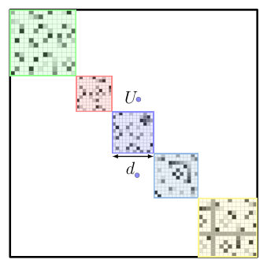
<figcaption class="paper-figure-caption"><b>Fig 1.</b> FIG. 1. Example of a block-unitary matrix Lm i=1 Ui with m = 5 blocks, each associated with a distinct color, drawn from the Block-Unitary Ensemble U(H|M). The blocks Ui are independent Haar-random unitary matrices, each of di- mension di.</figcaption>
</figure>
<figure class="paper-figure-card">
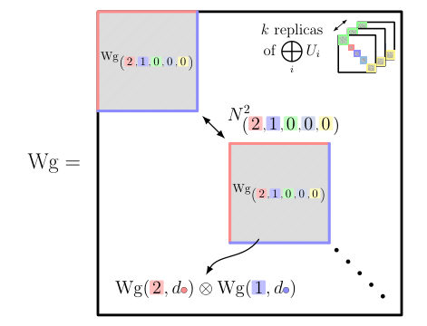
<figcaption class="paper-figure-caption"><b>Fig 2.</b> FIG. 2. Pictorial representation of the block-diagonal struc- ture of the Weingarten matrix for the Block-Unitary Ensem- ble (3) for k = 3 replicas (top right) and m = 5 colors. The occupation vector n = {ni}m i=1 specifies how many of the k replicas are associated with each color (block). For each fixed n, the Weingarten matrix contains N 2 n equivalent blocks. Each block factorizes into ordinary unitary Wein- garten matrices Wg(ni, di), one for each occupied color. In the figure, we show two of the N 2 n = 9 blocks for n = </figcaption>
</figure>
<figure class="paper-figure-card">
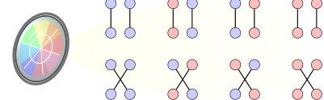
<figcaption class="paper-figure-caption"><b>Fig 3.</b> FIG. 3. Diagrammatic representation of the elements of Comk(U(H|M)) for k, m = 2. Each color-preserving permu- tation graph between two colored words is such that there are k columns and m possible colors for each filled circle.</figcaption>
</figure>
<figure class="paper-figure-card">
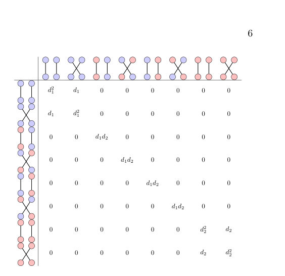
<figcaption class="paper-figure-caption"><b>Fig 4.</b> FIG. 4. Gram matrix of the color-preserving permutation operators for two replicas and two sectors (k = m = 2), with sector dimensions d1 and d2. Rows and columns are labeled by diagrams DA, and each entry is the Hilbert–Schmidt overlap GA,B = Tr  D† ADB  . Graphically, this overlap is evaluated by composing the adjoint of the first diagram with the second and closing the remaining wires. Each closed loop of color i contributes a factor di, while incompatible colors give zero. The same-color diagrams form the two 2 × 2 blocks G(2, d1) and G(2, d2); the four mixed-color diagrams are then d1d2.</figcaption>
</figure>
<figure class="paper-figure-card">
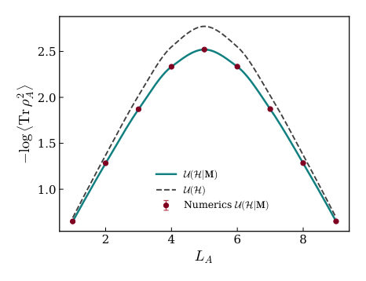
<figcaption class="paper-figure-caption"><b>Fig 5.</b> FIG. 5. Annealed second-R´enyi Page curve −log Tr ρ2 A for a system of L = 10 spin-1/2 degrees of freedom with fixed total charge Q = 4. The solid curve is obtained via Eq. (74). The circles are numerical Haar samples in the fixed-charge sector. The gray dashed curve is the ordinary full-Haar Page curve on HA ⊗HB, shown for comparison.</figcaption>
</figure>
</div>

<p><strong>Summary.</strong> This paper introduces a 'Colored Weingarten Calculus' to analyze quantum systems constrained by symmetries, modeled by the Block-Unitary Ensemble. It develops a mathematical framework showing that the system's dynamics are governed by color-preserving permutations rather than standard permutations. This has direct applications to understanding thermalization in many-body systems and quantum information theory.</p>
<p><strong>Why it may be interesting.</strong> This work provides powerful, general mathematical tools (Weingarten Calculus) to analyze thermalization and quantum scrambling in many-body systems that possess underlying symmetries, bridging quantum information theory and condensed matter physics.</p>
<details>
<summary>Detailed structure</summary>
<p><strong>Main problem.</strong> The paper develops a constructive Weingarten Calculus for the Block-Unitary Ensemble to provide a unified mathematical framework for systems where quantum randomness is constrained by symmetries.</p>
<p><strong>Main result.</strong> The calculus reveals a symmetry-resolved Schur-Weyl duality, showing that the average of operators is governed by color-preserving permutations, leading to a block-diagonal structure in the Gram matrix.</p>
<p><strong>Method.</strong> The authors calculate Haar moments and Gram matrix elements by analyzing the commutant of the collective unitary action, generalizing permutation group theory to color-preserving permutations.</p>
<p><strong>Model / system.</strong> The model is the Block-Unitary Ensemble, $U(H|M) = U(H_1) 	imes \cdots 	imes U(H_m)$, which describes quantum systems whose Hilbert space is decomposed into independent symmetry-resolved subspaces. This is motivated by contexts like the Eigenstate Thermalization Hypothesis (ETH).</p>
<p><strong>Key observables.</strong> The $k$-th order twirling map $\Phi^{(k)} U(H|M)(O^{\otimes k})$ and the resulting correlation functions $\langle O^U_{ij} 
angle$ are key observables.</p>
<p><strong>Important parameters / regimes.</strong> The number of subspaces ($m$), the replica number ($k$), the dimension of each subspace ($d_i$), and the occupation vector $\mathbf{n}$ are crucial parameters.</p>
<p><strong>Assumptions / limitations.</strong> The analysis assumes that the system dynamics can be effectively modeled by independent Haar-random unitaries acting on symmetry-constrained subspaces, allowing for the use of the Block-Unitary Ensemble.</p>
<p><strong>Figures summary.</strong> Figures illustrate the block-unitary matrix structure (Fig. 1) and the block-diagonal factorization of the Weingarten matrix based on the occupation vector (Fig. 2).</p>
<p><strong>Paper structure.</strong> The paper progresses by first defining the Block-Unitary Ensemble and its commutant (Chunk 2), then deriving the general form of the Gram matrix elements using color-preserving permutations (Chunk 3), and finally applying this calculus to calculate correlation functions in the energy eigenbasis (Chunk 4).</p>
</details>
<details>
<summary>Abstract</summary>
<p>Haar randomness is the standard null model for quantum typicality, scrambling, and random-matrix formulations of thermalization. In many physical settings, however, randomness is naturally constrained to subspaces of Hilbert space. This structure arises, in particular, both in systems with symmetry-resolved sectors and in the Eigenstate Thermalization Hypothesis (ETH), where mesoscopic energy windows define subspaces in which nearby energy eigenstates are mixed. Motivated by these settings, we consider a Block-Unitary Ensemble consisting of independently Haar-random unitaries acting on each subspace. We develop a constructive Weingarten Calculus for this ensemble, providing a unified framework across quantum information and many-body physics. This construction reveals a symmetry-resolved Schur-Weyl duality, where the relevant commutant is not the ordinary permutation algebra, but the one of color-preserving permutations. We apply this framework to quantum states under symmetry constraints and to energy-resolved ensembles for ETH.</p>
</details>
<p><sub><a href="#top">↑ back to top</a></sub></p>

<p><a id="paper-2609.31609"></a></p>
<h3 id="exact-series-formulas-for-the-capacities-of-the-amplitude-damping-channel"><a href="http://arxiv.org/abs/2609.31609v1">Exact series formulas for the capacities of the amplitude damping channel</a></h3>
<p><strong>Authors:</strong> Stefano Pirandola<br>
<strong>Type:</strong> theory · <strong>Category:</strong> quantum information and computing · <strong>PDF:</strong> <a href="https://arxiv.org/pdf/2609.31609v1">https://arxiv.org/pdf/2609.31609v1</a><br>
<strong>Analysis basis:</strong> full PDF text, analyzed in chunks
<strong>Topic relevance:</strong> <code>Keldysh / 2PI / non-Gaussian methods</code> <strong>1/5</strong> · <code>methods for driven-dissipative</code> <strong>1/5</strong></p>
<div class="figure-strip-hint">↔ Scroll figures horizontally</div>
<div class="paper-figures-scroll">
<figure class="paper-figure-card">
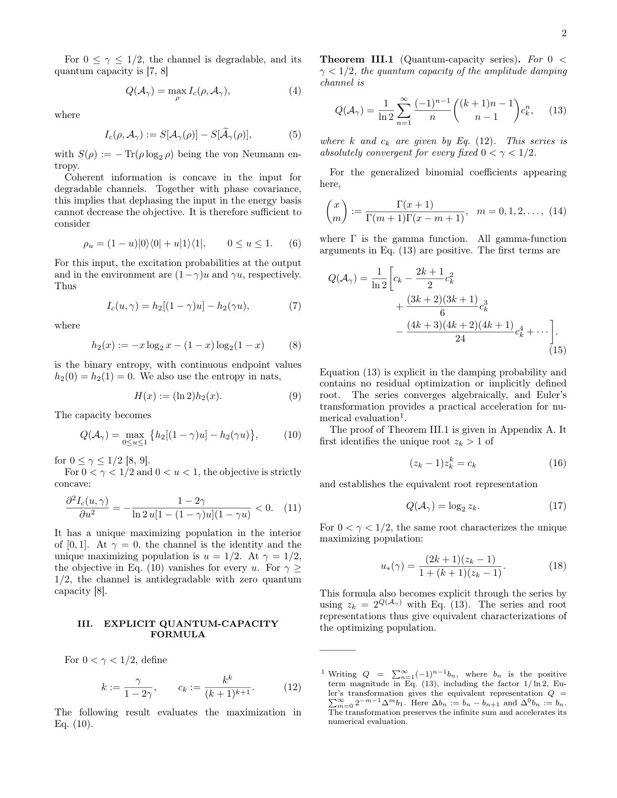
<figcaption class="paper-figure-caption"><b>Fig 1.</b> Low-resolution page preview, page 2</figcaption>
</figure>
<figure class="paper-figure-card">
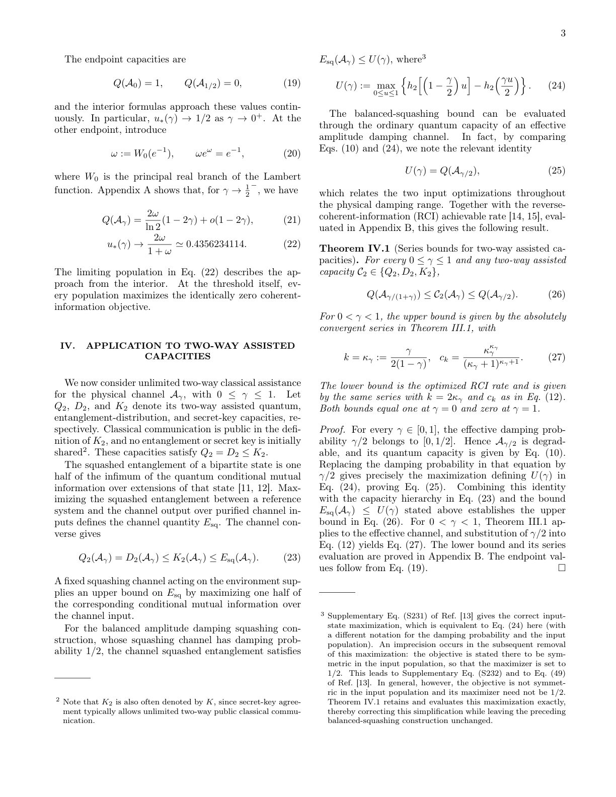
<figcaption class="paper-figure-caption"><b>Fig 2.</b> Low-resolution page preview, page 3</figcaption>
</figure>
<figure class="paper-figure-card">
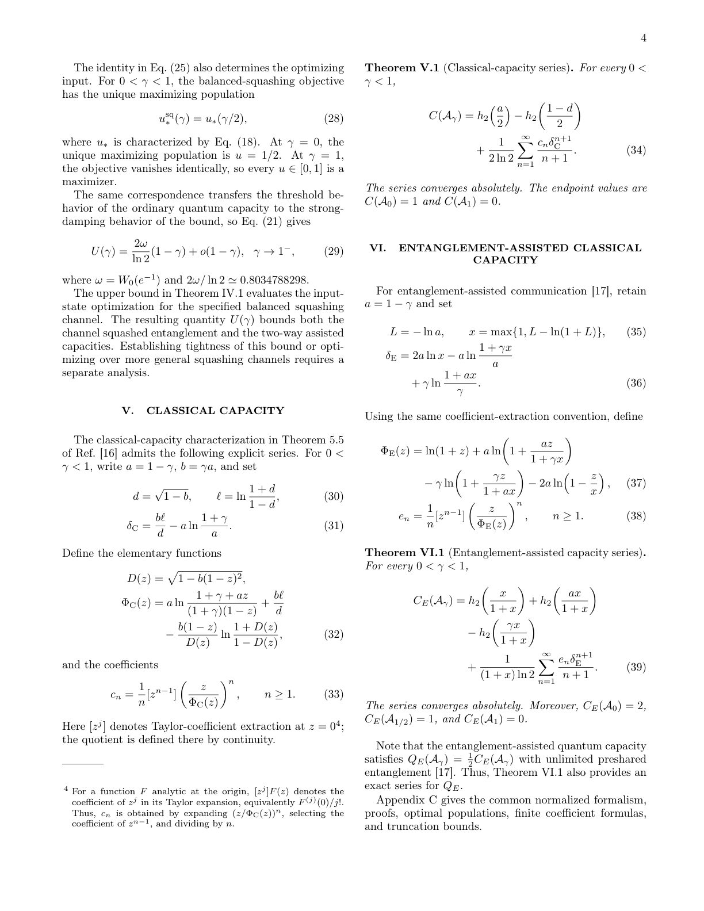
<figcaption class="paper-figure-caption"><b>Fig 3.</b> Low-resolution page preview, page 4</figcaption>
</figure>
<figure class="paper-figure-card">
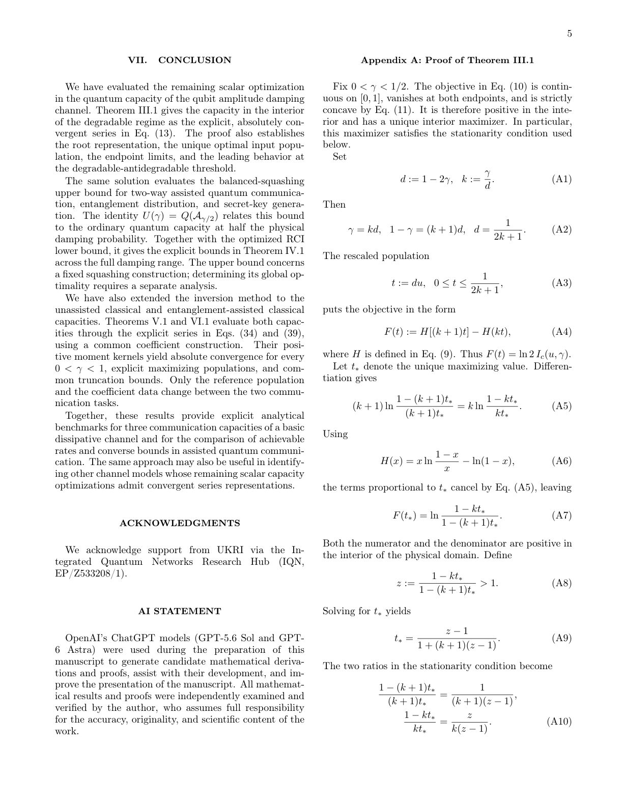
<figcaption class="paper-figure-caption"><b>Fig 4.</b> Low-resolution page preview, page 5</figcaption>
</figure>
<figure class="paper-figure-card">
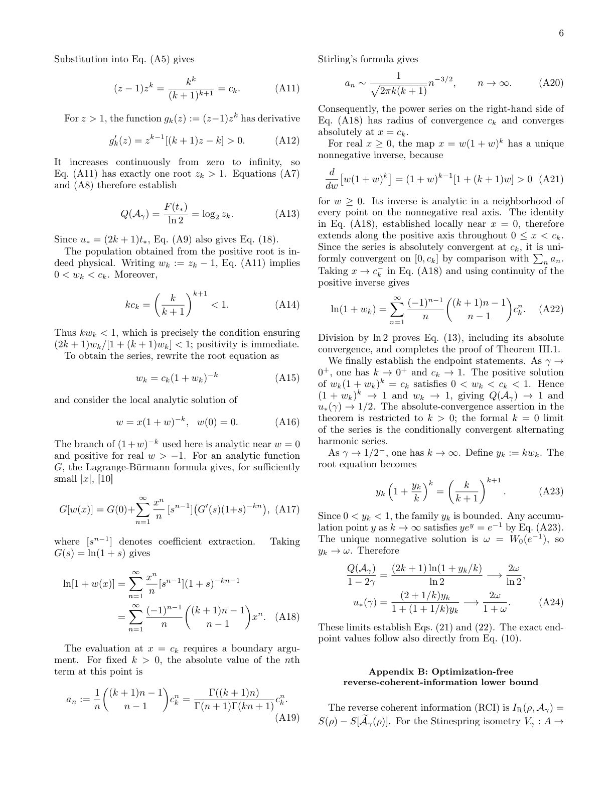
<figcaption class="paper-figure-caption"><b>Fig 5.</b> Low-resolution page preview, page 6</figcaption>
</figure>
</div>

<p><strong>Summary.</strong> This paper provides exact, convergent series formulas for calculating the quantum, classical, and entanglement-assisted capacities of the qubit amplitude damping channel. By employing advanced mathematical techniques, the authors characterize the limits of information transmission over this common noisy quantum channel. The results offer crucial analytical benchmarks for quantum communication theory.</p>
<p><strong>Why it may be interesting.</strong> This work provides rigorous, exact mathematical characterizations of information loss in a fundamental open quantum system (amplitude damping), which is crucial for understanding quantum communication protocols in realistic noisy environments.</p>
<details>
<summary>Detailed structure</summary>
<p><strong>Main problem.</strong> The paper aims to derive exact, explicit series formulas for the various information-carrying capacities (quantum, classical, entanglement-assisted) of the qubit amplitude damping channel.</p>
<p><strong>Main result.</strong> It provides convergent series representations for these capacities, characterizing the optimal input states and establishing analytical bounds for two-way assisted communication.</p>
<p><strong>Method.</strong> The authors employ advanced techniques including Lagrange-Bürmann inversion, optimization of coherent information, and the use of normalized moment formalisms to derive closed-form series.</p>
<p><strong>Model / system.</strong> The primary model is the qubit amplitude damping channel, $A_\gamma$, which models energy dissipation in a quantum system characterized by the damping probability $\gamma$.</p>
<p><strong>Key observables.</strong> Quantum Capacity $Q(A_\gamma)$, Unassisted Classical Capacity $C(A_\gamma)$, Entanglement-Assisted Capacity $CE(A_\gamma)$, and the lower bound for two-way assisted capacity $   ext{RRCI}(\gamma)$.</p>
<p><strong>Important parameters / regimes.</strong> The damping probability $\gamma$ ($0 \le \gamma \le 1$), and derived parameters like $k = \gamma/(1-2\gamma)$ and optimal input populations $u^*_\gamma$.</p>
<p><strong>Assumptions / limitations.</strong> The analysis often restricts optimization to diagonal input states ($
ho_u$) and relies on the absolute convergence of the derived series representations.</p>
<p><strong>Figures summary.</strong> Not specified in the provided notes, but the structure implies comparisons between derived capacity formulas and known limits at $\gamma=0$ and $\gamma=1/2$.</p>
<p><strong>Paper structure.</strong> The paper systematically derives formulas for different capacities (Quantum, Classical, Entanglement-Assisted) using series expansions, establishes bounds for two-way communication, and analyzes the behavior in different regimes of the damping parameter $\gamma$.</p>
</details>
<details>
<summary>Abstract</summary>
<p>We derive explicit, absolutely convergent series formulas for the quantum, unassisted classical, and entanglement-assisted classical capacities of the qubit amplitude damping channel, eliminating residual optimizations and implicit roots. We also obtain analytical upper and lower bounds on two-way assisted quantum and private communication capacities by evaluating a balanced-squashing bound and optimizing the reverse coherent information. Our results characterize the optimal input populations, establish convergence and truncation properties, and provide analytical benchmarks for quantum and classical communication over dissipative channels.</p>
</details>
<p><sub><a href="#top">↑ back to top</a></sub></p>

<p><a id="paper-2609.31101"></a></p>
<h3 id="a-flatness-generalization-relation-in-the-teacher-student-tree-committee-machine"><a href="http://arxiv.org/abs/2609.31101v1">A Flatness-Generalization Relation in the Teacher-Student Tree-Committee Machine</a></h3>
<p><strong>Authors:</strong> Brandon Livio Annesi, Davide Straziota, Enrico Maria Malatesta<br>
<strong>Type:</strong> theory · <strong>Category:</strong> disordered systems and neural networks · <strong>PDF:</strong> <a href="https://arxiv.org/pdf/2609.31101v1">https://arxiv.org/pdf/2609.31101v1</a><br>
<strong>Analysis basis:</strong> full PDF text, analyzed in chunks
<strong>Topic relevance:</strong> <code>Keldysh / 2PI / non-Gaussian methods</code> <strong>1/5</strong></p>
<div class="figure-strip-hint">↔ Scroll figures horizontally</div>
<div class="paper-figures-scroll">
<figure class="paper-figure-card">
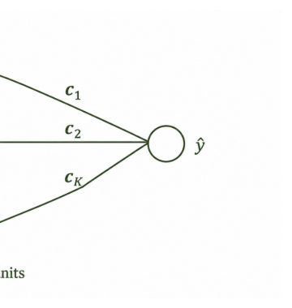
<figcaption class="paper-figure-caption"><b>Fig 1.</b> Figure 1. Schematic representation of a tree committee machine.</figcaption>
</figure>
<figure class="paper-figure-card">
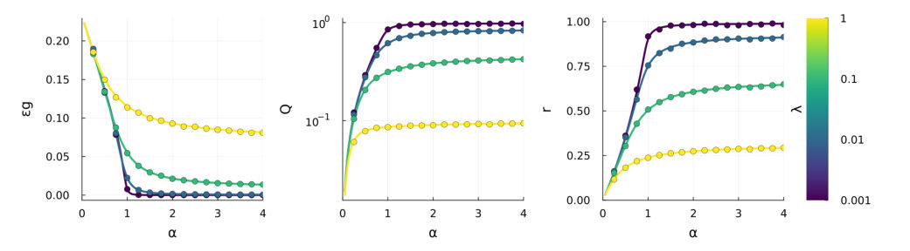
<figcaption class="paper-figure-caption"><b>Fig 2.</b> Figure 2. Generalization error and order parameters for regression. The RS theory predicts the test error ϵg, squared norm Q, and teacher–student overlap r as functions of sample complexity α and regularization strength λ. Curves are theoretical predictions; markers report finite-size (N = 2000, K = 20) GD simulations, averaged over 20 seeds. Error bars are not shown because they are very small.</figcaption>
</figure>
<figure class="paper-figure-card">
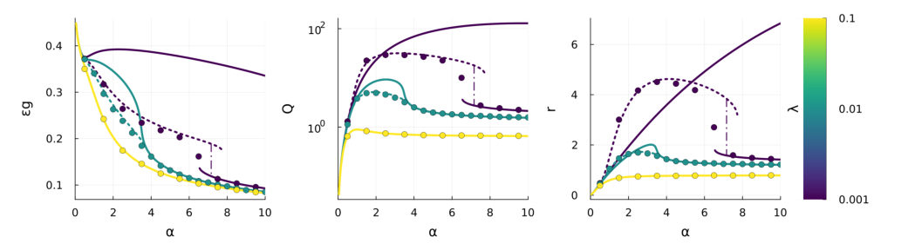
<figcaption class="paper-figure-caption"><b>Fig 3.</b> Figure 3. Classification order parameters. Solid curves denote RS solutions, while dashed curves denote 1RSB solutions. Markers report finite-size GD simulations for N = 2000, K = 20, averaged over 20 seeds. Error bars are not shown because they are very small.</figcaption>
</figure>
<figure class="paper-figure-card">
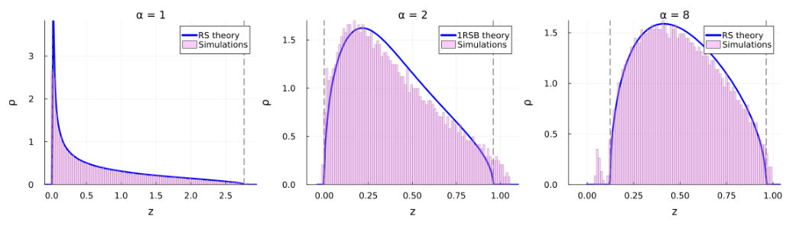
<figcaption class="paper-figure-caption"><b>Fig 4.</b> Figure 4. Empirical spectrum vs theoretical spectrum for N = 2000, K = 20 and λ = 0.01. The left panel shows regression; the middle and right panels show classification.</figcaption>
</figure>
<figure class="paper-figure-card">
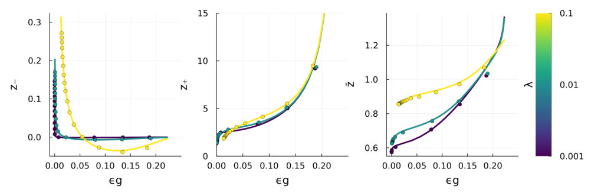
<figcaption class="paper-figure-caption"><b>Fig 5.</b> Figure 5. Flatness observables versus generalization error in regression. Markers are given by GD simulations with N = 2000, K = 20. In the phases where the empirical spectrum develops outliers, we show the smallest eigenvalue of the continuous bulk.</figcaption>
</figure>
</div>

<p><strong>Summary.</strong> This theoretical paper analyzes the flatness-generalization relationship in a specific neural network model using advanced statistical mechanics techniques. By calculating the Hessian spectrum and generalization error analytically, the authors show that the correlation between flatness and generalization is highly conditional, depending critically on whether the network is over- or under-parameterized and the specific learning task.</p>
<p><strong>Why it may be interesting.</strong> The rigorous application of statistical physics tools (replica method, free energy calculations) to analyze generalization bounds in deep learning models provides deep theoretical insights into the relationship between local geometry (flatness) and global performance (generalization).</p>
<details>
<summary>Detailed structure</summary>
<p><strong>Main problem.</strong> The paper investigates the controversial 'flatness-generalization relation' in neural networks, determining if a flat loss landscape at the minimizer implies good generalization performance.</p>
<p><strong>Main result.</strong> The correlation between flatness measures (left/right edge, spectral mean) and generalization error strongly depends on the learning task (regression vs. classification) and the ratio of parameters to data points.</p>
<p><strong>Method.</strong> The authors use advanced theoretical tools like the zero-temperature Gibbs formulation, Edwards-Jones formalism, and the replica method to analytically derive predictions for the Hessian spectrum and generalization error.</p>
<p><strong>Model / system.</strong> The model studied is a teacher-student tree-committee machine, analyzed in the proportional high-dimensional limit. The analysis involves calculating observables related to the empirical loss and the Hessian matrix.</p>
<p><strong>Key observables.</strong> Flatness measures (left edge, right edge, spectral mean) of the Hessian spectrum, generalization error ($\epsilon_{	ext{regr}}^g$, $\epsilon_{	ext{class}}^g$), and order parameters ($Q, q_{ab}^l, r_a^l$).</p>
<p><strong>Important parameters / regimes.</strong> Dataset size ($\alpha$), regularization strength ($\lambda$), and the ratio of parameters to data points (overparametrized vs. underparametrized regimes).</p>
<p><strong>Assumptions / limitations.</strong> The analysis relies on the tractability of the teacher-student committee machine model and utilizes approximations like the 1RSB solution and the annealed ansatz in the replica method.</p>
<p><strong>Figures summary.</strong> Figure 1 schematically represents the tree committee machine. Figure 2 shows theoretical predictions for test error, squared norm, and teacher-student overlap versus $\alpha$ and $\lambda$ for regression.</p>
<p><strong>Paper structure.</strong> The paper progresses by first setting up the model and defining observables, then employing the replica method to calculate the free energy and Hessian spectrum in the high-dimensional limit, and finally analyzing the correlation between flatness and generalization error across different learning tasks and parameter regimes.</p>
</details>
<details>
<summary>Abstract</summary>
<p>The flatness of the loss landscape at a minimizer is a widely used heuristic for reasoning about neural-network generalization, yet evidence for this relation is mostly empirical and controversial. We study this relation in a teacher-student tree committee machine, where both the ERM estimator and the Hessian spectrum are analytically tractable in the proportional high-dimensional limit. First, we use a zero-temperature Gibbs formulation to obtain predictions for the observables of the typical minimizers of the empirical loss. Secondly, we use Edwards-Jones formalism to derive the limiting Hessian resolvent around these typical minimizers. All predictions agree with finite-size gradient-descent simulations. Finally, we study three measures of flatness, namely the left and right edges and the spectral mean, and check if a decrease in generalization error as the dataset size is increased corresponds to an increase in flatness. We find that the answer strongly depends on the learning task and on the ratio of the number of parameters to the number of data points. In regression, the spectral mean and right edge correlate with the generalization error, while the left edge does so only in the overparametrized regime. In classification this correlation reliably holds only in the highly overparametrized phase, while for underparametrized networks it can even reverse.</p>
</details>
<p><sub><a href="#top">↑ back to top</a></sub></p>

<p><a id="paper-2609.30762"></a></p>
<h3 id="a-generalized-stein-lemma-for-quantum-channels"><a href="http://arxiv.org/abs/2609.30762v1">A Generalized Stein Lemma for Quantum Channels</a></h3>
<p><strong>Authors:</strong> Minbo Gao, Zhengfeng Ji, Chenghua Liu<br>
<strong>Type:</strong> theory · <strong>Category:</strong> quantum information and computing · <strong>PDF:</strong> <a href="https://arxiv.org/pdf/2609.30762v1">https://arxiv.org/pdf/2609.30762v1</a><br>
<strong>Analysis basis:</strong> full PDF text, analyzed in chunks
<strong>Topic relevance:</strong> <code>quantum measurements</code> <strong>1/5</strong></p>
<div class="figure-strip-hint">↔ Scroll figures horizontally</div>
<div class="paper-figures-scroll">
<figure class="paper-figure-card">
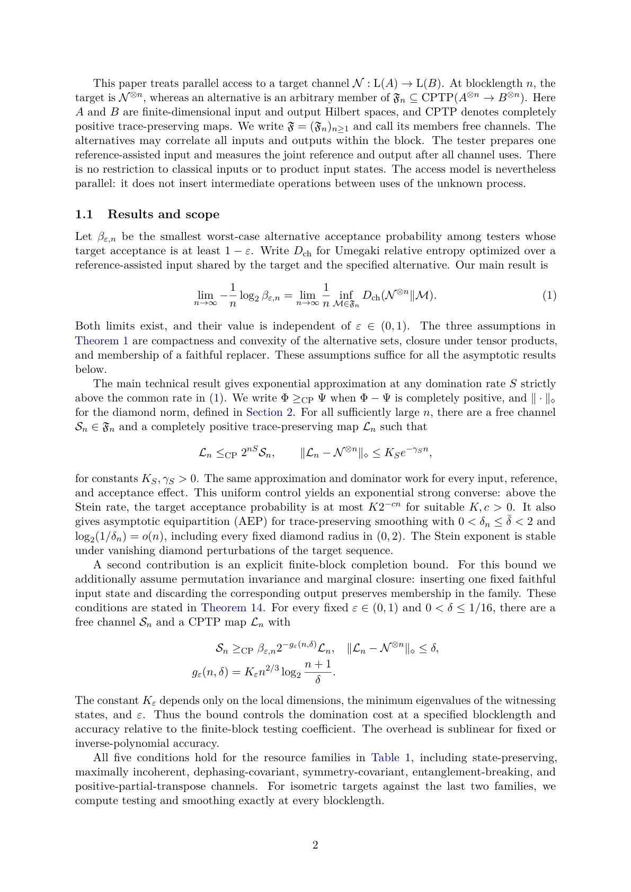
<figcaption class="paper-figure-caption"><b>Fig 1.</b> Low-resolution page preview, page 2</figcaption>
</figure>
<figure class="paper-figure-card">
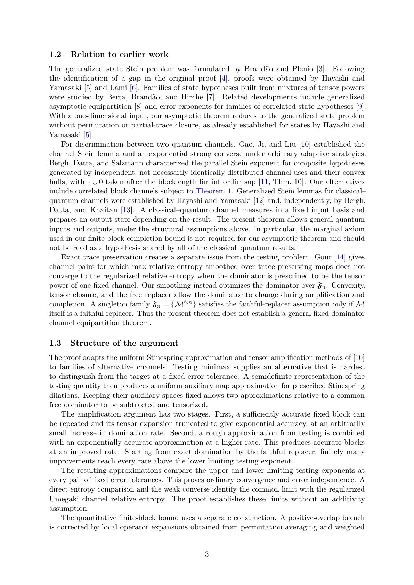
<figcaption class="paper-figure-caption"><b>Fig 2.</b> Low-resolution page preview, page 3</figcaption>
</figure>
<figure class="paper-figure-card">
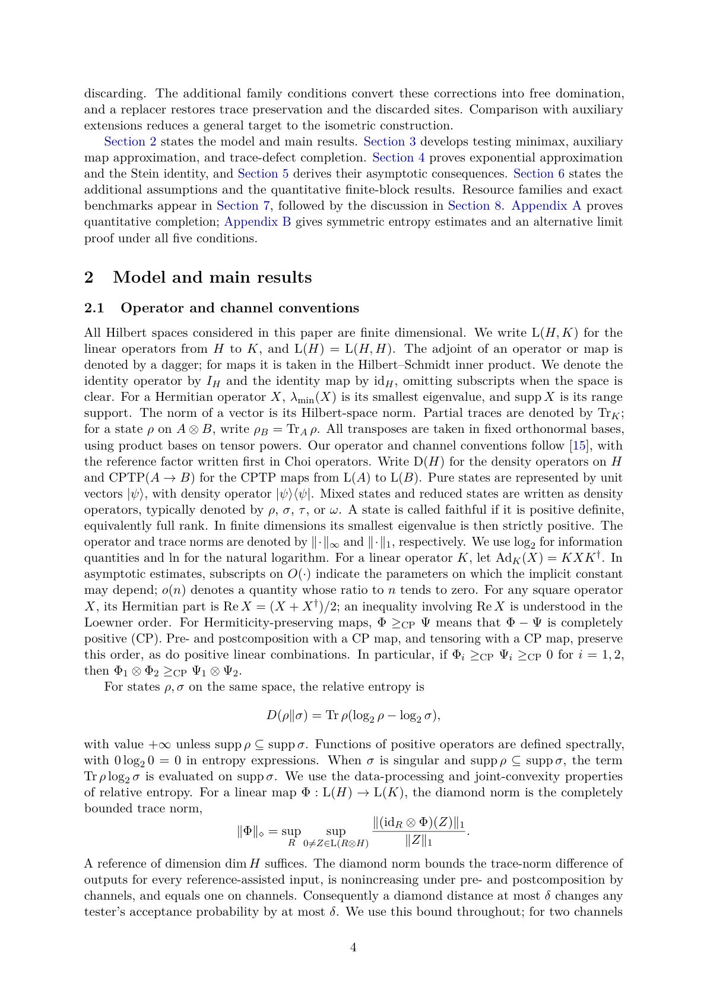
<figcaption class="paper-figure-caption"><b>Fig 3.</b> Low-resolution page preview, page 4</figcaption>
</figure>
<figure class="paper-figure-card">
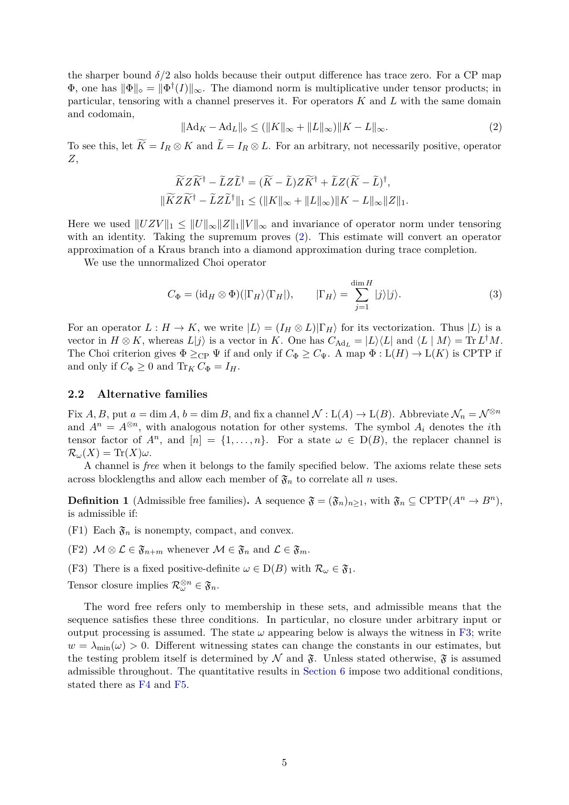
<figcaption class="paper-figure-caption"><b>Fig 4.</b> Low-resolution page preview, page 5</figcaption>
</figure>
<figure class="paper-figure-card">
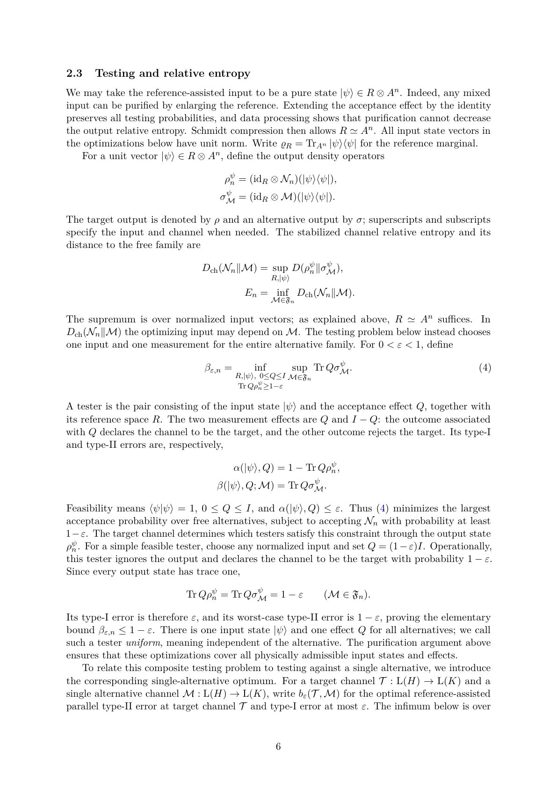
<figcaption class="paper-figure-caption"><b>Fig 5.</b> Low-resolution page preview, page 6</figcaption>
</figure>
</div>

<p><strong>Summary.</strong> This paper generalizes the quantum Stein lemma to analyze the discrimination of quantum channels. It proves that the asymptotic error exponent in quantum hypothesis testing is governed by the minimum regularized Umegaki relative entropy over alternative channels. The work provides strong theoretical guarantees, including an exponential strong converse and finite-block bounds, applicable to various quantum processes.</p>
<p><strong>Why it may be interesting.</strong> It provides rigorous mathematical tools (Stein's Lemma) to quantify the distinguishability of quantum processes, which is fundamental for understanding channel capacity and resource quantification in open quantum systems.</p>
<details>
<summary>Detailed structure</summary>
<p><strong>Main problem.</strong> The paper aims to prove a generalized quantum Stein lemma for the parallel discrimination of a target quantum channel against families of alternative channels.</p>
<p><strong>Main result.</strong> It establishes an asymptotic equivalence between the optimal type-II error exponent in hypothesis testing and the regularized Umegaki channel relative entropy minimized over the alternatives.</p>
<p><strong>Method.</strong> The proof combines advanced techniques including uniform auxiliary map approximation, iterative reduction of the domination rate, and tensor amplification.</p>
<p><strong>Model / system.</strong> The system involves quantum channels (CPTP maps) acting on finite-dimensional Hilbert spaces. Inputs can be entangled across multiple channel uses and with an auxiliary reference system.</p>
<p><strong>Key observables.</strong> Type-I and Type-II error probabilities ($\alpha_n, eta_n$), the Umegaki relative entropy $D(
ho\|\sigma)$, and the asymptotic testing exponent.</p>
<p><strong>Important parameters / regimes.</strong> The error tolerance $\epsilon$, the number of uses $n$, and the rate $S$ (related to the entropy limit).</p>
<p><strong>Assumptions / limitations.</strong> The alternative channels must be compact and convex, closed under tensor products, and contain a faithful replacer for the main result to hold.</p>
<p><strong>Paper structure.</strong> The paper develops the model and main results in Section 2, details the testing minimax problem in Section 3, proves the exponential approximation/Stein identity in Section 4, and derives asymptotic consequences in Section 5.</p>
</details>
<details>
<summary>Abstract</summary>
<p>We prove a generalized quantum Stein lemma for parallel discrimination of an arbitrary finite-dimensional channel against families of alternative channels. The alternatives are compact and convex, closed under tensor products, and contain a faithful replacer. At every fixed type-I error tolerance, the optimal type-II error exponent equals the regularized Umegaki channel relative entropy minimized over the alternatives, and both defining limits exist. Inputs may be entangled across channel uses and with a reference system. The main technical result constructs exactly trace-preserving approximations with exponentially small diamond error, dominated in completely positive order by free channels at every rate above the common exponent. The proof combines uniform auxiliary map approximation, iterative reduction of the domination rate, and tensor amplification. It yields asymptotic equipartition with trace-preserving smoothing at every subexponentially vanishing error, an exponential strong converse, and stability under vanishing diamond-norm perturbations. Under additional permutation invariance and closure under insertion of a fixed faithful input state and discarding of its output, we also prove an explicit finite-block completion bound. This quantitative construction uses weighted discarding, local operator corrections, and comparison with auxiliary extensions. Applications include state-preserving, coherence-restricted, covariant, entanglement-breaking, and positive-partial-transpose channels. For isometric targets against entanglement-breaking or positive-partial-transpose alternatives, we obtain exact finite-block testing and smoothing formulas.</p>
</details>
<p><sub><a href="#top">↑ back to top</a></sub></p>

<p><a id="paper-2609.31504"></a></p>
<h3 id="bound-states-in-2d-yukawa-theory-from-hamiltonian-truncation"><a href="http://arxiv.org/abs/2609.31504v1">Bound States in 2d Yukawa Theory from Hamiltonian Truncation</a></h3>
<p><strong>Authors:</strong> Olivier Delouche, Kara Farnsworth, Francesco Riva<br>
<strong>Type:</strong> theory · <strong>Category:</strong> strongly correlated electrons · <strong>PDF:</strong> <a href="https://arxiv.org/pdf/2609.31504v1">https://arxiv.org/pdf/2609.31504v1</a><br>
<strong>Analysis basis:</strong> full PDF text, analyzed in chunks
<strong>Topic relevance:</strong> <code>Keldysh / 2PI / non-Gaussian methods</code> <strong>1/5</strong></p>
<div class="figure-strip-hint">↔ Scroll figures horizontally</div>
<div class="paper-figures-scroll">
<figure class="paper-figure-card">
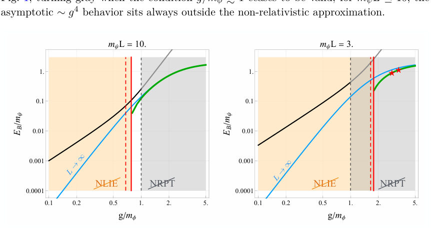
<figcaption class="paper-figure-caption"><b>Fig 1.</b> Figure 1: Finite-volume binding energy in units of mψ in the Thirring/Sine-Gordon model computed with NRPT (black – turning gray outside its regime of validity) and the NLIE (green), compared with the infinite-volume result (blue). In the gray (orange) area NRPT (the NLIE) breaks down; red solid (dashed) lines denote numerical (analytic) breakdown of the NLIE. Red stars compare our results with those of Ref. [69]. For NRPT and the Thirring/Sine-Gordon model there is no distinction between input and physical masses: mψ = mψ,phys = Ms.</figcaption>
</figure>
<figure class="paper-figure-card">
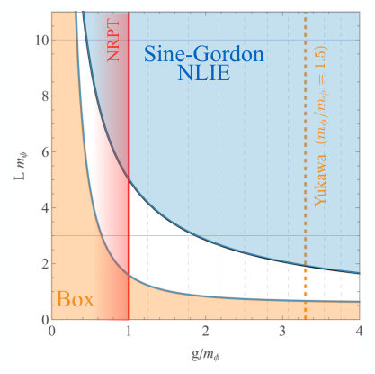
<figcaption class="paper-figure-caption"><b>Fig 2.</b> Figure 2: Sketch of the parameter-space coupling/volume, where the different approxima- tions to compute the binding energy are reliable. At small coupling/volume L ≲LB, the bound state doesn’t fit in the box and the best approach is perturbation theory around free finite-volume states (orange area). Below g/mϕ ≲1 NRPT is reliable. The NLIE results of Eq. (A.1) are accurate at larger coupling/volume (in the Sine-Gordon limit), but it breaks down at small coupling/volume, see Eq. (A.6). At large coupling the bound state might become smaller than the Yukawa reach for small enough mϕ, as given by the example dashed-orange line. Light-gray vertical dashed lines correspond to thresholds where...</figcaption>
</figure>
<figure class="paper-figure-card">
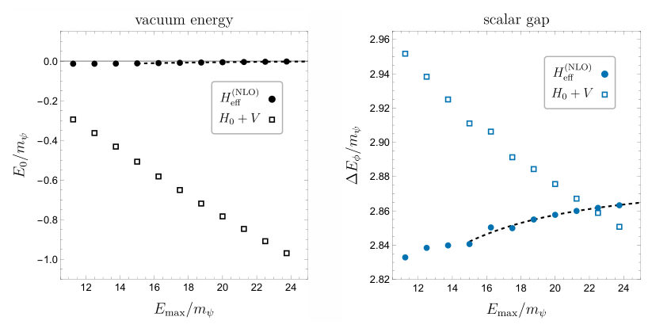
<figcaption class="paper-figure-caption"><b>Fig 3.</b> Figure 3: The Emax dependence of the vacuum energy and scalar gap for mϕ/mψ = 3 and g/mϕ = 0.5. Squares are the raw results from H0 + V , while circles are the EFT- corrected results from Eq. (3.44) and Eq. (3.46). Dashed lines denote m2 ψ/E2 max fits to the EFT-corrected data over the range Emax/mψ ≥15.</figcaption>
</figure>
<figure class="paper-figure-card">
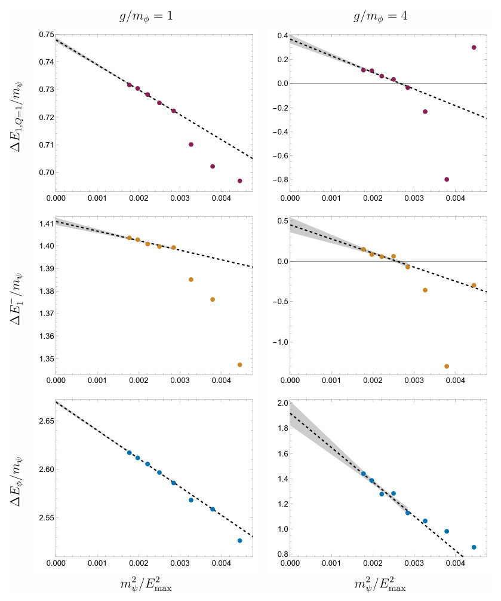
<figcaption class="paper-figure-caption"><b>Fig 4.</b> Figure 4: The remaining Emax dependence for three low-lying states with mϕ/mψ = 3, at g/mϕ = 1 (left) and g/mϕ = 4 (right). From top to bottom: the physical fermion mass (Q = 1 sector), the lowest C−gap, and the C+ gap associated with the one-particle scalar state (both Q = 0 sector). Dashed lines are fits in m2 ψ/E2 max to the data with Emax/mψ ≥18.75, extrapolated to Emax →∞, and the gray bands are the 1σ error bars,</figcaption>
</figure>
<figure class="paper-figure-card">
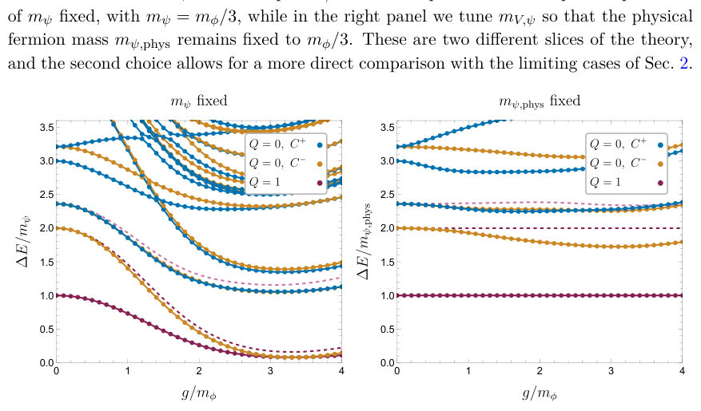
<figcaption class="paper-figure-caption"><b>Fig 5.</b> Figure 5: Spectrum of the lowest P = 0 states in the Q = 0 and Q = 1 sectors for Emax/mψ = 23.75. In the left plot the input fermion mass mψ is kept fixed, while on the right mV,ψ is numerically tuned so that mψ,phys is fixed. The lowest Q = 1, P = 0 gap, which we identify with the physical fermion mass, is shown in purple. The remaining states are in the Q = 0, P = 0 sector, separated by their charge conjugation eigenvalue, C+</figcaption>
</figure>
</div>

<p><strong>Summary.</strong> This work investigates the bound states in 2D Yukawa theory using advanced numerical techniques like Hamiltonian Truncation. By extending the theory to include necessary divergences, the authors map out the binding energy evolution across coupling strengths. The results provide non-perturbative insights into strongly interacting quantum field models, relevant for condensed matter physics.</p>
<p><strong>Why it may be interesting.</strong> The techniques developed—Hamiltonian Truncation and EFT extensions—are powerful, non-perturbative tools for analyzing strongly coupled quantum field theories, which is highly relevant for understanding strongly correlated electron systems.</p>
<details>
<summary>Detailed structure</summary>
<p><strong>Main problem.</strong> The study focuses on determining the energy spectrum, particularly the bound states, of two-dimensional Yukawa theory, especially in regimes where standard perturbation theory fails.</p>
<p><strong>Main result.</strong> The authors successfully track the evolution of fermion-antifermion bound states from weak to strong coupling, finding agreement with finite-volume perturbation theory at weak coupling.</p>
<p><strong>Method.</strong> The primary method employed is Hamiltonian Truncation (HT) and its extension, Hamiltonian Truncation Effective Theory (HTET), which is used to study the spectrum by restricting the Hilbert space up to a cutoff energy.</p>
<p><strong>Model / system.</strong> The system is the two-dimensional Yukawa theory, described by a Lagrangian involving a scalar field ($\phi$) and a fermionic field ($\psi$). The theory can be related to the massive Thirring/Sine-Gordon models in certain limits.</p>
<p><strong>Key observables.</strong> Binding energy ($E_B$) of fermion-antifermion bound states, and the energy spectrum of the system.</p>
<p><strong>Important parameters / regimes.</strong> Coupling constants ($g$), masses ($m_\phi, m_\psi$), and the energy cutoff ($E_{	ext{max}}$). The analysis explores weak, strong, and large $m_\phi$ coupling regimes.</p>
<p><strong>Assumptions / limitations.</strong> The calculations rely on Hamiltonian Truncation, which is computationally limited by the exponential growth of the Hilbert space. The analysis also involves approximations like the non-relativistic limit and the large $m_\phi$ limit.</p>
<p><strong>Figures summary.</strong> Figure 1 compares finite-volume binding energy computed via NRPT, NLIE, and infinite-volume results for the Thirring/Sine-Gordon model. Figure 11 compares the perturbative result with Hamiltonian truncation results for the binding energy, showing cutoff dependence.</p>
<p><strong>Paper structure.</strong> The paper develops the theory by first establishing the general framework using HTET, then analyzing specific limits (like the non-relativistic and large $m_\phi$ limits) to calculate the binding energy, and finally comparing these results against established perturbative and finite-volume methods.</p>
</details>
<details>
<summary>Abstract</summary>
<p>We study the spectrum of two-dimensional Yukawa theory using Hamiltonian truncation, with a focus on bound states. We extend the framework of Hamiltonian truncation effective theory to include fermions and logarithmic UV divergences. With these corrections, the energy levels converge as a function of the cutoff with the scaling predicted by power counting. We identify a strategy to follow the evolution of fermion-antifermion bound states from weak to strong coupling, and investigate its binding energy, finding good agreement with finite-volume perturbation theory at weak coupling. Finally, we explore the heavy-scalar regime toward the massive Thirring/Sine-Gordon limit, recovering the expected weak-coupling behavior and outlining how the calculation can be extended toward this limit.</p>
</details>
<p><sub><a href="#top">↑ back to top</a></sub></p>

<p><a id="paper-2609.31484"></a></p>
<h3 id="cofi-dqi-curve-based-optimal-function-intersection-via-decoded-quantum-interferometry"><a href="http://arxiv.org/abs/2609.31484v1">COFI-DQI: Curve-based Optimal Function Intersection via Decoded Quantum Interferometry</a></h3>
<p><strong>Authors:</strong> Gretchen L. Matthews, Julia Shapiro<br>
<strong>Type:</strong> theory · <strong>Category:</strong> quantum information and computing · <strong>PDF:</strong> <a href="https://arxiv.org/pdf/2609.31484v1">https://arxiv.org/pdf/2609.31484v1</a><br>
<strong>Analysis basis:</strong> full PDF text, analyzed in chunks
<strong>Topic relevance:</strong> <code>quantum measurements</code> <strong>1/5</strong></p>
<div class="figure-strip-hint">↔ Scroll figures horizontally</div>
<div class="paper-figures-scroll">
<figure class="paper-figure-card">

<figcaption class="paper-figure-caption"><b>Fig 1.</b> Figure 1. Comparison of DQI and Prange for Suzuki one-point codes over F8 in the balanced case r = q/2 = 4. Panel (a) plots the expected satisfaction fraction s/n, while panel (b) plots the advantage sDQI/n −sPrange/n.</figcaption>
</figure>
</div>

<p><strong>Summary.</strong> This work develops COFI, a generalized framework for applying Decoded Quantum Interferometry (DQI) to solve complex optimization problems over finite fields. By analyzing various Algebraic Geometry codes, the authors prove that advanced code families, like Suzuki codes, offer superior performance guarantees compared to simpler constructions when used within the DQI quantum framework.</p>
<p><strong>Why it may be interesting.</strong> While the focus is on classical coding theory applied to quantum algorithms, the rigorous comparison of code structures and the derivation of performance bounds are highly relevant to understanding the resource scaling and limitations of quantum algorithms in quantum information theory.</p>
<details>
<summary>Detailed structure</summary>
<p><strong>Main problem.</strong> The paper addresses the Maximum Linear Satisfiability (max-LINSAT) problem, framing it as a structured optimization task solvable via quantum decoding.</p>
<p><strong>Main result.</strong> The authors demonstrate that using advanced Algebraic Geometry (AG) codes, such as Suzuki or two-point Hermitian codes, leads to a strictly larger expected performance improvement (DQI satisfaction fraction) compared to standard constructions like one-point Hermitian codes.</p>
<p><strong>Method.</strong> The core method is Decoded Quantum Interferometry (DQI), which maps the classical optimization problem onto a syndrome-decoding problem for the dual of a linear code, leveraging quantum Fourier transforms.</p>
<p><strong>Model / system.</strong> The theoretical model involves constructing quantum states $|P(f)\rangle$ whose measurement probabilities bias towards solutions that maximize the satisfaction of linear constraints defined over a finite field $\mathbb{F}_q$. The underlying structure is defined by algebraic geometry codes on projective curves.</p>
<p><strong>Key observables.</strong> DQI Satisfaction Fraction ($s/n$), advantage over classical algorithms (e.g., Prange's algorithm), and the decoding radius ($\ell$).</p>
<p><strong>Important parameters / regimes.</strong> Code parameters such as genus ($g$), length ($n$), and the field size ($q$); the comparison between different code families (Suzuki vs. Hermitian).</p>
<p><strong>Assumptions / limitations.</strong> The analysis relies on the ability to uniquely decode errors up to a certain weight $\ell$ using the dual code, and the comparison results are contingent on suitable assumptions regarding the divisor degree.</p>
<p><strong>Figures summary.</strong> Figure 1 compares the expected satisfaction fraction and the advantage of DQI versus Prange's algorithm for Suzuki codes over $\mathbb{F}_8$. Tables compare satisfaction bounds for various code families.</p>
<p><strong>Paper structure.</strong> The paper builds upon the connection between max-LINSAT and decoding theory. It introduces COFI as a generalization of OPI, then systematically compares the performance of different AG code families (Extended Norm-Trace, Suzuki, Two-point Hermitian) against established benchmarks (Hermitian, Reed-Solomon) using explicit propositions and examples.</p>
</details>
<details>
<summary>Abstract</summary>
<p>In 2025, Jordan et al. introduced Decoded Quantum Interferometry (DQI), a quantum algorithm for combinatorial optimization based on decoding. They considered Reed-Solomon decoding and its associated optimization problem, called Optimal Polynomial Intersection (OPI), which may be viewed as a polynomial regression problem over a finite field. DQI exhibits provable speedups on certain problem instances and establishes a connection between decoding problems and optimization tasks. Leveraging the well-understood dual structure and decoding theory of algebraic geometry codes from other curve families, we introduce COFI: Curve-based Optimal Function Intersection. By considering two-point Hermitian codes, Suzuki codes, and extended norm-trace codes, we broaden the range of algebraic geometry codes used in DQI and identify families that offer further improvements over one-point Hermitian codes in the Hermitian Optimal Polynomial Intersection framework considered by Jordan and Gu. Depending on the family and parameter regime, these curves can reduce quantum resource requirements or increase the number of constraints that can be considered.</p>
</details>
<p><sub><a href="#top">↑ back to top</a></sub></p>

<p><a id="paper-2609.31488"></a></p>
<h3 id="connes-distance-in-discrete-time-quantum-walks"><a href="http://arxiv.org/abs/2609.31488v1">Connes Distance in Discrete-Time Quantum Walks</a></h3>
<p><strong>Authors:</strong> Rayan Trabelsi, A. F. Reyes-Lega, Pablo Arrighi<br>
<strong>Type:</strong> theory · <strong>Category:</strong> other · <strong>PDF:</strong> <a href="https://arxiv.org/pdf/2609.31488v1">https://arxiv.org/pdf/2609.31488v1</a><br>
<strong>Analysis basis:</strong> full PDF text, analyzed in chunks
<strong>Topic relevance:</strong> <code>analog quantum simulation</code> <strong>1/5</strong></p>
<div class="figure-strip-hint">↔ Scroll figures horizontally</div>
<div class="paper-figures-scroll">
<figure class="paper-figure-card">

<figcaption class="paper-figure-caption"><b>Fig 1.</b> Figure 1. Wavepacket probability densities for the discrete quantum walk. (a) Initial localized Gaussian state at t = 0. (b) Free walk evolution at N = 20 showing the macroscopic ballistic ring. (c) Magnetic walk evolution at N = 20 demonstrating spatial suppression and Landau-like confinement.</figcaption>
</figure>
<figure class="paper-figure-card">

<figcaption class="paper-figure-caption"><b>Fig 2.</b> Figure 2. (a) Numerical evaluation of the Connes distance for the free and magnetic quantum walks compared to their theoretical limits. (b) The numerical-to-asymptotic ratio R(N) for the free walk, which rapidly stabilizes near 1.12.</figcaption>
</figure>
<figure class="paper-figure-card">

<figcaption class="paper-figure-caption"><b>Fig 3.</b> Figure 3. Spread of the homogeneous 1+1D plastic quantum walk. (a) The numerical Connes distance plotted against walk steps N for different values of θ. (b) The spatial probability density PN(x) at N = 12 for different values of θ. The dotted vertical lines are the causal edges x = ±2Nϵ cos θ. (c) Connes distance as a function of the coin parameter θ at fixed N, comparing the numerical values (colored markers) with the analytical asymptotic prediction.</figcaption>
</figure>
<figure class="paper-figure-card">

<figcaption class="paper-figure-caption"><b>Fig 4.</b> Figure 4. Numerical evaluation of the Connes distance in an inhomogeneous spatial metric. (a) Spatial profiles of the speed of light c(x) = cos θ(x) (setting κ = 1), which encode the simulated metric g11. (b) Distorted wavepacket probability densities PN(x) at N = 30. (c) The numerical Connes distance plotted against walk steps N.</figcaption>
</figure>
</div>

<p><strong>Summary.</strong> This work develops a discrete analogue of Connes' distance to measure the geometric spread of quantum walks on lattices. By applying this metric to 2+1D and 1+1D models, the authors demonstrate that the distance quantifies how magnetic fields constrain propagation and how the metric naturally adapts to spatially varying geometries.</p>
<p><strong>Why it may be interesting.</strong> The application of Noncommutative Geometry tools like Connes' distance to quantum walks provides a powerful, mathematically rigorous way to quantify geometric effects (like magnetic fields or varying metrics) on quantum transport.</p>
<details>
<summary>Detailed structure</summary>
<p><strong>Main problem.</strong> The paper investigates the geometric spread of discrete-time quantum walks by adapting Connes' distance formula from continuous spectral geometry to a discrete lattice setting.</p>
<p><strong>Main result.</strong> The discrete Connes distance successfully measures wavepacket spread, showing that magnetic fields suppress long-time expansion, and the framework naturally captures inhomogeneous spatial metrics.</p>
<p><strong>Method.</strong> The authors adapt the Connes distance, defined via spectral triples, by replacing the continuous Dirac operator with a discrete unitary step operator, analyzing the resulting commutator norms.</p>
<p><strong>Model / system.</strong> The study focuses on discrete-time quantum walks (DTQWs) simulating systems ranging from free particles in (2+1)D space to walks on lattices simulating inhomogeneous metrics in (1+1)D.</p>
<p><strong>Key observables.</strong> Connes Distance ($d_D$), dynamical spread of Gaussian wavepackets, and the commutator norm of the step operator.</p>
<p><strong>Important parameters / regimes.</strong> Dimensionality (1+1D, 2+1D), magnetic field strength (gauge-induced phases), and the time step $\epsilon$.</p>
<p><strong>Assumptions / limitations.</strong> The analysis assumes the convergence of the discrete step operator to the continuous Dirac Hamiltonian in the limit $\epsilon 	o 0$.</p>
<p><strong>Paper structure.</strong> The paper progresses by first defining the discrete analogue of the Connes distance, then applying it to analyze the 2+1D case (free vs. magnetic field), and finally extending the framework to model inhomogeneous metrics in 1+1D using convex optimization.</p>
</details>
<details>
<summary>Abstract</summary>
<p>We study the geometric spread of discrete-time quantum walks using Connes' distance formula. We introduce its discrete analogue by adapting the continuous spectral metric to the lattice, with the Dirac operator replaced by the unitary step operator. Focusing first on a (2+1)-dimensional quantum walk, we evaluate the dynamical spread of localized wavepackets to compare propagation in free space against that under a uniform magnetic field. We find that while the free walk shows linear ballistic growth, gauge-induced phases in the magnetic walk constrain the admissible test operators, suppressing the long-time geometric expansion. Furthermore, we apply this discrete framework to a (1+1)-dimensional plastic quantum walk simulating an inhomogeneous spatial metric. The results demonstrate that the discrete Connes distance naturally captures the underlying spatially varying metric, providing a robust measure of the wavepacket's spread that adapts directly to the local simulated geometry.</p>
</details>
<p><sub><a href="#top">↑ back to top</a></sub></p>

<p><a id="paper-2609.31319"></a></p>
<h3 id="criticality-enabled-long-range-order-in-a-u1-symmetric-spin-1-heisenberg-chain-with-biquadratic-interactions"><a href="http://arxiv.org/abs/2609.31319v1">Criticality enabled long-range order in a U(1)-symmetric spin-1 Heisenberg chain with biquadratic interactions</a></h3>
<p><strong>Authors:</strong> Natalia Chepiga, Fabian H. L. Essler<br>
<strong>Type:</strong> theory · <strong>Category:</strong> strongly correlated electrons · <strong>PDF:</strong> <a href="https://arxiv.org/pdf/2609.31319v1">https://arxiv.org/pdf/2609.31319v1</a><br>
<strong>Analysis basis:</strong> full PDF text, analyzed in chunks
<strong>Topic relevance:</strong> <code>analog quantum simulation</code> <strong>1/5</strong></p>
<div class="figure-strip-hint">↔ Scroll figures horizontally</div>
<div class="paper-figures-scroll">
<figure class="paper-figure-card">

<figcaption class="paper-figure-caption"><b>Fig 1.</b> Figure 1: Phase diagram of the field theory (4) according to Ref. [13].</figcaption>
</figure>
<figure class="paper-figure-card">

<figcaption class="paper-figure-caption"><b>Fig 2.</b> Figure 2: Numerically obtained ground-state phase diagram of the ferromagnetic spin-1 chain with a single-ion anisotropy g1 and a biquadratic coupling g2. The Nahum transition between the unmagnetized and magnetized Luttinger liquids (red line, gc 2) is the main focus of this paper. The magnetized Luttinger-liquid phase is sep- arated from a saturated ferromagnetic phase by a Japaridze-Nersesyan-Pokrovsky- Talapov transition [17, 18] (blue line, gc 1). We probe the nature of the transitions numerically along vertical cuts (dashed gray lines) at fixed values of g2 = 0.1,0.4,1.</figcaption>
</figure>
<figure class="paper-figure-card">

<figcaption class="paper-figure-caption"><b>Fig 3.</b> Figure 3: Scaling of the bipartite entanglement entropy S(n, N) in the unmag- netized Luttinger-liquid phase at g1 = 0, g2 = 0.4 with OBC and system sizes N = 300,600,900. The central charge extracted by fitting the DMRG data (dots) to the Calabrese-Cardy formula in Eq.18 (lines) is in excellent agreement with the Luttinger-liquid prediction c = 1.</figcaption>
</figure>
<figure class="paper-figure-card">

<figcaption class="paper-figure-caption"><b>Fig 4.</b> Figure 4: Finite-size scaling collapse for longitudinal and transverse spin correla- tion functions in the unmagnetized Luttinger-liquid phase for g1 = 0, g2 = 0.4 and N = 600,900,1500. The Luttinger-liquid scaling functions with K = 5.98525 are shown as the red lines.</figcaption>
</figure>
<figure class="paper-figure-card">

<figcaption class="paper-figure-caption"><b>Fig 5.</b> Figure 5: Approximate scaling collapse in the unmagnetized Luttinger-liquid phase for g1 = −0.3, g2 = 0.4 and N = 300,600,900. The Luttinger-liquid scaling func- tions with fitted value K = 16.436 of the Luttinger parameter are shown as the red lines.</figcaption>
</figure>
</div>

<p><strong>Summary.</strong> This paper analyzes a spin-1 Heisenberg chain model to study the emergence of true long-range order in a U(1) symmetric system. Using DMRG and CFT, the authors find numerical evidence supporting a critical point predicted by field theory. The key finding is that the divergence of the Luttinger parameter at this transition confirms the existence of long-range order, which is crucial for understanding quantum criticality in low dimensions.</p>
<p><strong>Why it may be interesting.</strong> The work provides a detailed numerical confirmation of a non-trivial quantum critical point where symmetry breaking occurs in 1D, offering insights into how dimensionality and interaction terms can circumvent strict theorems.</p>
<details>
<summary>Detailed structure</summary>
<p><strong>Main problem.</strong> The paper investigates the emergence of true long-range order in one-dimensional quantum spin chains with continuous U(1) symmetry, challenging standard theorems that forbid such order.</p>
<p><strong>Main result.</strong> Numerical results confirm critical behavior predicted by Nahum's field theory, showing that the divergence of the Luttinger parameter and the critical exponent $\beta \approx 0.29$ support the existence of true long-range order at the quantum critical point.</p>
<p><strong>Method.</strong> The study employs Density Matrix Renormalization Group (DMRG) simulations, combined with Conformal Field Theory (CFT) analysis, to calculate entanglement entropy and critical exponents.</p>
<p><strong>Model / system.</strong> The system is an anisotropic spin-1 Heisenberg chain model incorporating biquadratic interactions, described by a specific Hamiltonian. The analysis maps the low-energy physics to a Luttinger liquid theory.</p>
<p><strong>Key observables.</strong> Magnetization exponent ($\beta$), Luttinger parameter ($K$), central charge ($c$), and the dynamical critical exponent ($z_{eff}$).</p>
<p><strong>Important parameters / regimes.</strong> The coupling constants $g_1$ and $g_2$ define the phase diagram, with critical points $g_c^1$ and $g_c^2$ marking transitions between different ordered phases.</p>
<p><strong>Assumptions / limitations.</strong> The analysis relies on mapping the system to a continuum field theory (Luttinger liquid) and comparing numerical results against $\epsilon$-expansion predictions.</p>
<p><strong>Figures summary.</strong> Figures illustrate the phase diagram, the scaling of entanglement entropy confirming $c=1$ for the Luttinger liquid, and the divergence of the Luttinger parameter $K$ near the critical point $g_c^2$.</p>
<p><strong>Paper structure.</strong> The paper systematically analyzes the phase diagram, first confirming Luttinger liquid behavior via entanglement entropy, then determining critical exponents ($\beta$) and the dynamical exponent ($z$) by analyzing finite-size scaling of excitation energies and the Luttinger parameter divergence.</p>
</details>
<details>
<summary>Abstract</summary>
<p>In a recent paper Nahum argued on the basis of a renormalization-group analysis that, contrary to standard lore, ground states of 1D spin chains with short-range interactions can spontaneously break U(1) ``easy-plane'' spin rotation symmetry. True long-range order of $(S^x,S^y)$ arises at the phase transition between two quasi-long-range-ordered phases. Here we present detailed numerical results for an anisotropic spin-1 chain model. We find a magnetization exponent $β\approx0.29$, consistent with the $ε$-expansion prediction $β\approx0.28$, a divergence of the Luttinger parameter on approaching the transition from both sides with an exponent that we relate to Nahum's transition, and finite-size spectra consistent with a dynamical critical exponent $z\approx2$. Our results support the critical behavior predicted by Nahum's field theory.</p>
</details>
<p><sub><a href="#top">↑ back to top</a></sub></p>

<p><a id="paper-2609.30916"></a></p>
<h3 id="emergence-of-nanoscale-modulation-in-liquid-crystals-as-a-result-of-short-range-order-parameter-condensation"><a href="http://arxiv.org/abs/2609.30916v1">Emergence of Nanoscale Modulation in Liquid Crystals as a Result of Short-Range Order Parameter Condensation</a></h3>
<p><strong>Authors:</strong> E. I. Kats<br>
<strong>Type:</strong> theory · <strong>Category:</strong> statistical mechanics · <strong>PDF:</strong> <a href="https://arxiv.org/pdf/2609.30916v1">https://arxiv.org/pdf/2609.30916v1</a><br>
<strong>Analysis basis:</strong> full PDF text, analyzed in chunks
<strong>Topic relevance:</strong> <code>Frenkel-Kontorova</code> <strong>1/5</strong></p>
<div class="figure-strip-hint">↔ Scroll figures horizontally</div>
<div class="paper-figures-scroll">
<figure class="paper-figure-card">

<figcaption class="paper-figure-caption"><b>Fig 1.</b> Low-resolution page preview, page 2</figcaption>
</figure>
<figure class="paper-figure-card">

<figcaption class="paper-figure-caption"><b>Fig 2.</b> Low-resolution page preview, page 3</figcaption>
</figure>
<figure class="paper-figure-card">

<figcaption class="paper-figure-caption"><b>Fig 3.</b> Low-resolution page preview, page 4</figcaption>
</figure>
<figure class="paper-figure-card">

<figcaption class="paper-figure-caption"><b>Fig 4.</b> Low-resolution page preview, page 5</figcaption>
</figure>
</div>

<p><strong>Summary.</strong> This theoretical work explains the emergence of nanoscale heliconical structures in liquid crystals by proposing that the transition is driven by the condensation of a short-range orientational order parameter. Using Landau theory, the authors show this mechanism is analogous to other known phase transitions, predicting the resulting modulated phase and associated Goldstone modes.</p>
<p><strong>Why it may be interesting.</strong> The concept of a secondary, hidden order parameter condensing at a finite wave vector to drive a phase transition is a general mechanism in condensed matter physics, relevant to understanding modulated phases in complex systems.</p>
<details>
<summary>Detailed structure</summary>
<p><strong>Main problem.</strong> The paper addresses the spontaneous formation of nanoscale periodic structures, specifically the heliconical modulation, observed in the twist-bend nematic phase of liquid crystals.</p>
<p><strong>Main result.</strong> This modulation arises from the condensation of a secondary, short-range orientational order parameter ($\varphi$) at a finite wave vector ($\mathbf{q}_0$), rather than a simple loss of conventional nematic order.</p>
<p><strong>Method.</strong> The analysis employs a Landau phenomenological theory, drawing analogies to established phase transitions like the de Gennes nematic-smectic-A transition.</p>
<p><strong>Model / system.</strong> The system is liquid crystals (bent-core/dimeric molecules) exhibiting the N-NTB transition. The theory models the free energy using two order parameters: the long-range nematic director ($\mathbf{n}$) and the short-range correlation parameter ($\varphi$).</p>
<p><strong>Key observables.</strong> Heliconical modulation pitch ($\Lambda = 2\pi/q_0$), the secondary order parameter ($\varphi$), and the associated Goldstone mode.</p>
<p><strong>Important parameters / regimes.</strong> The wave vector $\mathbf{q}_0$, and parameters governing the effective potential (e.g., $\alpha, eta$ in the chiral case).</p>
<p><strong>Assumptions / limitations.</strong> The theory assumes the transition is driven by the condensation of $\varphi$ and predicts the transition is weakly first-order due to fluctuation effects.</p>
<p><strong>Paper structure.</strong> The paper develops the Landau theory by first establishing the role of the secondary order parameter $\varphi$ condensing at $\mathbf{q}_0$. It then analyzes the resulting heliconical structure, drawing parallels to known phase transitions and discussing the implications of fluctuation corrections.</p>
</details>
<details>
<summary>Abstract</summary>
<p>The discovery of the twist-bend nematic phase in liquid crystals composed of bent-core and dimeric molecules has revealed an unexpected mechanism for the spontaneous formation of nanoscale periodic structures in soft condensed matter. Unlike conventional liquid-crystalline phases, the twist-bend phase exhibits a nanoscale heliconical modulation despite the absence of molecular chirality. In this note, dedicated to the late R. Meyer, we discuss a Landau phenomenological interpretation of this phenomenon. The central idea is that a short-range orientational order parameter undergoes condensation, giving rise to a heliconical structure characterized by a finite wave vector. We emphasize that the conventional nematic order is already long-ranged, whereas the additional order parameter describes local orientational correlations hidden within the nematic state. The resulting phase transition bears a close analogy to the de Gennes theory of the nematic--smectic-A transition. Fluctuation effects are expected to drive the transition weakly first order. The theory also predicts a new Goldstone mode associated with the spontaneously broken continuous symmetry of the heliconical state</p>
</details>
<p><sub><a href="#top">↑ back to top</a></sub></p>

<p><a id="paper-2609.30368"></a></p>
<h3 id="is-the-fractional-chern-insulator-superconductor-transition-in-twisted-motemath585math-direct"><a href="http://arxiv.org/abs/2609.30368v1">Is the fractional Chern insulator-superconductor transition in twisted MoTe$_2$ direct?</a></h3>
<p><strong>Authors:</strong> Tevž Lotrič, Steven H. Simon<br>
<strong>Type:</strong> both · <strong>Category:</strong> strongly correlated electrons · <strong>PDF:</strong> <a href="https://arxiv.org/pdf/2609.30368v1">https://arxiv.org/pdf/2609.30368v1</a><br>
<strong>Analysis basis:</strong> full PDF text, analyzed in chunks
<strong>Topic relevance:</strong> <code>analog quantum simulation</code> <strong>1/5</strong></p>
<div class="figure-strip-hint">↔ Scroll figures horizontally</div>
<div class="paper-figures-scroll">
<figure class="paper-figure-card">

<figcaption class="paper-figure-caption"><b>Fig 1.</b> Figure 1. Left: Replotted ρxx(ν, D) from Ref. [2], showing four minima, associated with the fractional Chern insulator (FCI), reentrant integer quantum Hall (RIQHE), and super- conducting (SC) phases at the lowest temperature achieved in experiment. The phases are separated by peaks in ρxx. Right: As temperature approaches zero, the resistive peaks are ex- pected to become narrower. We sketch three possible natural topologies of the zero-temperature quantum phase diagram. In the present work, we argue that scenario (B), where the RIQHE is always an intervening phase between the FCI and SC, naturally explains the observed transport signatures.</figcaption>
</figure>
<figure class="paper-figure-card">

<figcaption class="paper-figure-caption"><b>Fig 2.</b> Figure 2. The resistive peak in ρxx as a function of ρxy for various temperatures in the D = 0 cut of the phase diagram. The higher temperatures show a dependence reminiscent of a scaled semicircle in the (ρxy, ρxx) plane (red dashes), while at lower temperatures the peak in ρxx is suppressed, and a knee in the data appears near ρxy ∼h/e2. [Data from Ref. [2]]</figcaption>
</figure>
<figure class="paper-figure-card">

<figcaption class="paper-figure-caption"><b>Fig 3.</b> Figure 4. The faint feature near ρxy = h/e2 in Fig. 2 is amplified by introducing a displacement field D. This sta- bilises the RIQHE phase, and the shape of the resistivity curve evolves towards the simulated behaviour in Fig. 3 for a better- developed RIQHE phase [Data from Ref. [2]].</figcaption>
</figure>
<figure class="paper-figure-card">

<figcaption class="paper-figure-caption"><b>Fig 4.</b> Figure 3. Theoretical evolution of the effective resistivity as the background potential µ is varied for different values of ρRI xx. (A) Typical configurations evolve from being dominated by the FCI, to an intervening RIQHE phase, and finally into the SC phase. For all parameters, the RIQHE regions lie be- tween the FCI and SC phases (w = 2 for those plots). (B) The derived effective resistivity evolution. For a strong RIQHE (ρRI xx = ϵ), we see two semicircles, describing a pair of perco- lation transitions. For a weak RIQHE (ρRI xx = 0.4h/e2), the resistivity is similar to that expected for an FCI-SC semicir- cle, and intermediate values interpolate between the extremes. Note that all...</figcaption>
</figure>
</div>

<p><strong>Summary.</strong> This paper re-examines transport data in twisted MoTe2 to study the transition between a Fractional Chern Insulator and a superconductor. By modeling the material as an inhomogeneous patchwork of three phases, the authors argue that the transition is mediated by a Re-entrant Integer Quantum Hall Effect (RIQHE) phase, predicting that the apparent direct transition should split into two distinct transitions at low temperatures.</p>
<p><strong>Why it may be interesting.</strong> The work connects topological superconductivity (SC) with fractional quantum Hall physics (FCI) via a mechanism involving integer quantum Hall physics (RIQHE), which is highly relevant to understanding emergent topological phases in correlated materials.</p>
<details>
<summary>Detailed structure</summary>
<p><strong>Main problem.</strong> The paper investigates the nature of the transition between a fractional Chern insulator (FCI) and a superconducting (SC) phase in twisted MoTe2, specifically determining if it is direct or mediated by an intermediate phase.</p>
<p><strong>Main result.</strong> The analysis strongly suggests that the transition is not direct, but rather involves a Re-entrant Integer Quantum Hall Effect (RIQHE) phase acting as an intervening state at low temperatures.</p>
<p><strong>Method.</strong> The authors re-analyzed experimental transport data and developed a theoretical model treating the sample as an inhomogeneous 'patchwork' of three distinct phases (FCI, RIQHE, SC).</p>
<p><strong>Model / system.</strong> The physical system is twisted MoTe2, which exhibits FCI, SC, and RIQHE phases. The model uses a quenched disorder potential to assign local regions to one of these three phases, allowing for percolation-based calculations of transport properties.</p>
<p><strong>Key observables.</strong> Longitudinal resistivity (rho_xx) and Hall resistivity (rho_xy) as functions of temperature and displacement field (D).</p>
<p><strong>Important parameters / regimes.</strong> Filling fraction (nu), displacement field (D), and the disorder potential parameters ($\mu, w$).</p>
<p><strong>Assumptions / limitations.</strong> The system is assumed to be inhomogeneous, composed of puddles of different topological phases. The low-temperature regime requires ignoring the local-conductivity approximation near the SC end.</p>
<p><strong>Figures summary.</strong> Figure 1 sketches the possible zero-temperature topologies (A, B, C) for the transition. Figure 2 shows the resistive peak behavior, and Figure 3/4 illustrate the theoretical evolution of resistivity as the disorder mean ($\mu$) or displacement field ($D$) is varied.</p>
<p><strong>Paper structure.</strong> The paper progresses by first analyzing the experimental data to identify the resistive peak structure, proposing the RIQHE as the missing link. It then develops a theoretical model based on quenched disorder to reproduce the observed temperature and field dependence, culminating in the prediction of a split transition.</p>
</details>
<details>
<summary>Abstract</summary>
<p>The observation of superconducting behaviour near a fractional Chern insulator in twisted MoTe$_2$ has sparked excitement about a possible direct "anyon superconducting" transition between a topologically ordered and a symmetry-broken phase. We carefully examine the experimentally measured transport data in the relevant region of the low-temperature tMoTe$_2$ phase diagram and propose a scenario where the nearby reentrant integer quantum Hall effect (RIQHE) acts as an intervening phase between the two. While the RIQHE is most prominent at large displacement fields, we propose that it extends to smaller fields at very low temperatures. Based on this picture, we model the sample as a patchwork of the three phases and show that such a model can explain the main qualitative features of the transport phase diagram, including its dependence on temperature and displacement field. The model predicts that at lower electronic temperatures the apparent FCI-SC transition at zero displacement field should split into two transitions separated by a narrow RIQHE region.</p>
</details>
<p><sub><a href="#top">↑ back to top</a></sub></p>

<p><a id="paper-2609.31070"></a></p>
<h3 id="quantum-diffusion-models-for-medical-image-analysis"><a href="http://arxiv.org/abs/2609.31070v1">Quantum Diffusion Models for Medical Image Analysis</a></h3>
<p><strong>Authors:</strong> Francesco Aldo Venturelli, Stefano Martina, Marco Parigi, Filippo Caruso, Alba Cervera-Lierta, Miguel A. González Ballester<br>
<strong>Type:</strong> both · <strong>Category:</strong> quantum information and computing · <strong>PDF:</strong> <a href="https://arxiv.org/pdf/2609.31070v1">https://arxiv.org/pdf/2609.31070v1</a><br>
<strong>Analysis basis:</strong> full PDF text, analyzed in chunks
<strong>Topic relevance:</strong> <code>QC/QI experiment</code> <strong>1/5</strong></p>
<div class="figure-strip-hint">↔ Scroll figures horizontally</div>
<div class="paper-figures-scroll">
<figure class="paper-figure-card">

<figcaption class="paper-figure-caption"><b>Fig 1.</b> FIG. 1. Hybrid quantum diffusion model. Given an initial image x0 at time t = 0, every single pixel is associated with a quantum walker whose corresponding color i0 is initially encoded in the quantum state |i0⟩. The depicted quantum circuit visualizes only one of the multiple time steps of the DTQW algorithm, where |ψpos⟩≡|i0⟩, |ψcoin⟩≡|0⟩, H are Hadamard gates, Rk are gates diag(1, exp(2πi/2k)) (and their controlled versions diag(1, 1, 1, exp(2πi/2k))), F† is the inverse Quantum Fourier Transform [57], and C is the coin operation (implemented in our case with a Hadamard gate). The green-shaded block is repeated for the needed time steps. To obtain the pixel values of xt at time t we...</figcaption>
</figure>
<figure class="paper-figure-card">

<figcaption class="paper-figure-caption"><b>Fig 2.</b> FIG. 2. Five samples of the original set of BloodMNIST images Fig. 2a and five samples of images generated by our model Fig. 2b. Each image has a shape of 64 × 64 with 32 intensity levels for each RGB channel.</figcaption>
</figure>
<figure class="paper-figure-card">

<figcaption class="paper-figure-caption"><b>Fig 3.</b> FIG. 3. BloodMNIST distribution of the two largest eigen- values of the PCA for 3 000 original samples (purple) and 100 generated samples (orange). The contours represent the KDE.</figcaption>
</figure>
<figure class="paper-figure-card">

<figcaption class="paper-figure-caption"><b>Fig 4.</b> FIG. 4. Five samples of the original set of BraTS2020 images Fig. 4a and five samples of the brain images generated by our model Fig. 4b. Each image has a shape of 190 × 190 with 64 intensity levels.</figcaption>
</figure>
<figure class="paper-figure-card">

<figcaption class="paper-figure-caption"><b>Fig 5.</b> FIG. 6. Volume rendering of 5 distinct samples from Fig. 6a the original dataset FractureMNIST3D and Fig. 6b generated volumes produced by the 3D U-Net. Renderings generated using 3D Slicer.</figcaption>
</figure>
</div>

<p><strong>Summary.</strong> This paper proposes a novel Quantum Diffusion Model architecture for medical image analysis by combining a quantum walk for the forward noise process and a classical neural network for the reverse denoising step. By executing the quantum component on real quantum hardware, the authors demonstrate a scalable method capable of handling large medical datasets. The results show that this quantum-enhanced approach is highly competitive with state-of-the-art classical diffusion models.</p>
<p><strong>Why it may be interesting.</strong> The integration of quantum walks (a quantum algorithm) directly into the generative modeling framework of diffusion models provides a novel computational pathway for simulating complex physical processes in imaging.</p>
<details>
<summary>Detailed structure</summary>
<p><strong>Main problem.</strong> The paper addresses the application of Quantum Diffusion Models (QDMs) for the complex task of medical image analysis.</p>
<p><strong>Main result.</strong> The proposed hybrid model, utilizing a quantum forward process and a classical backward process, shows competitive and promising results when benchmarked against classical diffusion models.</p>
<p><strong>Method.</strong> It employs a hybrid approach where the forward diffusion dynamics are modeled using a Discrete-Time Quantum Walk (DTQW) on a real quantum device, while the reverse denoising step is handled by a classical U-Net model.</p>
<p><strong>Model / system.</strong> The system involves modeling data corruption via a DTQW circuit on NISQ devices, which is then reversed by a U-Net trained to approximate the reverse conditional probabilities. The data tested includes grayscale, RGB 2D images, and 3D volumes from medical datasets.</p>
<p><strong>Key observables.</strong> Kullback-Leibler (KL) divergence, Fréchet Inception Distance (FID), and Structural Similarity Index Measure (SSIM) are used to benchmark image generation quality.</p>
<p><strong>Important parameters / regimes.</strong> The process is sensitive to the noise level ($eta_t$) and the specific quantum hardware capabilities (NISQ devices).</p>
<p><strong>Assumptions / limitations.</strong> The method assumes that the quantum forward process can be effectively implemented on current noisy quantum hardware, and that the classical U-Net can accurately invert the quantum noise process.</p>
<p><strong>Figures summary.</strong> Figures compare the diffusion process evolution (PDF tracking) across time steps for BloodMNIST, and show PCA projections comparing generated samples from the quantum model versus classical Markov chain counterparts.</p>
<p><strong>Paper structure.</strong> The paper introduces the hybrid QDM framework, details the DTQW for the forward process, describes the U-Net for the classical backward process, and validates the approach by benchmarking performance across various medical datasets and topologies.</p>
</details>
<details>
<summary>Abstract</summary>
<p>Quantum Machine Learning is a novel field of research aimed at devising machine learning approaches exploiting principles of quantum mechanics, such as superposition, entanglement and interference. In this context, we present a scalable hybrid Quantum Diffusion Model, and evaluate its use for medical image analysis. Specifically, our method is based on a Discrete-Time Quantum Walk algorithm, executed on a real quantum device, to model the forward dynamics of the diffusion model. For the backward step of the diffusion model, we devise and evaluate a classical learning model, which is used to reversely denoise the data. In contrast with other existing attempts at applying quantum machine learning for image analysis tasks, severely limited by the size of existing quantum devices, our method allows to process real-world large size medical data. In particular, we present results on grayscale and RGB images, as well as 3D volumes of moderate sizes. We benchmark our results by reproducing an alternative classical counterpart model, based on diffusion models on discrete state spaces. By doing so, we compare the generation capabilities of both models in terms of three distinct state-of-the-art metrics in the field of image generation, showing the competitive, promising results of our approach.</p>
</details>
<p><sub><a href="#top">↑ back to top</a></sub></p>

<p><a id="paper-2609.31618"></a></p>
<h3 id="quantum-representation-selects-neutral-skyrmion-molecules"><a href="http://arxiv.org/abs/2609.31618v1">Quantum Representation Selects Neutral Skyrmion Molecules</a></h3>
<p><strong>Authors:</strong> Vishnu Jejjala<br>
<strong>Type:</strong> theory · <strong>Category:</strong> strongly correlated electrons · <strong>PDF:</strong> <a href="https://arxiv.org/pdf/2609.31618v1">https://arxiv.org/pdf/2609.31618v1</a><br>
<strong>Analysis basis:</strong> full PDF text, analyzed in chunks
<strong>Topic relevance:</strong> <code>analog quantum simulation</code> <strong>1/5</strong></p>
<div class="figure-strip-hint">↔ Scroll figures horizontally</div>
<div class="paper-figures-scroll">
<figure class="paper-figure-card">

<figcaption class="paper-figure-caption"><b>Fig 1.</b> FIG. 1. Changing the local multiplet exchanges the neutral composition. (a) The gyroscopic charges of species A and B are −p and +q; the same flag texture has the same energy in either multiplet. (b,c) A common stretched pair gives approximately equal species displacements in (1, 1) and a 2:1 ratio in (1, 2). (d,e) A common trimer preparation gives the reciprocal 1:2 and 1:1 responses. Symbols let all local amplitudes evolve; lines keep each site in a flag state. ∆R⊥ s is the displacement of the center of species s = A, B, measured perpendicular to the preparation axis. For full states, the winding centers use the highest and lowest eigenlines of the local SU(3) moment [9]. For a trimer,...</figcaption>
</figure>
<figure class="paper-figure-card">

<figcaption class="paper-figure-caption"><b>Fig 2.</b> FIG. 2. The neutral trimer remains bound while becoming easier to deform. (a,b) Winding per plaquette at η/h = 4, with the sign of the core winding taken as positive: νA = −qv and νB = −qw. The complete sums are two and one; the color scales are independent. Two A lobes at ±(5.73, 5.73)a flank the central B lobe, forming a diagonal molecule. (c) Binding energy ∆Ebind = EA2 + EB −EA2B relative to separately optimized fragments. (d) Shape stiffness λshape, the lowest energy curvature for a change of shape, excluding translation and rotation from the plot. Both remain positive across ten sampled attraction strengths. Squares increase the lattice size; diamonds change the exchange stiffness ρ...</figcaption>
</figure>
<figure class="paper-figure-card">

<figcaption class="paper-figure-caption"><b>Fig 3.</b> FIG. 3. A prepared neutral trimer translates with little de- formation. (a) Displacement in lattice units, d/a, follows vτ, with dimensionless speed v = 2 × 10−4 and time τ = E0t/ℏ; the physical speed is vE0a/ℏ. (b) The global profile error dprof compares the evolved state with a translated initial profile; filled endpoints use an exact lattice shift by (1, −1)a. The two methods are specified in the Supplemental Material. The total travel, 1.4a, is about 9% of the 16a distance between the outer A lobes.</figcaption>
</figure>
</div>

<p><strong>Summary.</strong> This paper explores how the quantum state available at each site in an SU(3) magnet determines the required composition of a stable, neutral skyrmion molecule. By analyzing the cancellation of gyroscopic forces, the authors show that the local quantum representation dictates whether the molecule is a pair or a trimer. The findings confirm the stability and predictable motion of these neutral structures, offering insights into topological matter in strongly correlated systems.</p>
<p><strong>Why it may be interesting.</strong> The work connects topological defects (skyrmions) to underlying quantum symmetries (local representations), providing a mechanism for controlling macroscopic properties (motion) via microscopic quantum constraints, which is relevant to emergent phenomena in correlated materials.</p>
<details>
<summary>Detailed structure</summary>
<p><strong>Main problem.</strong> The study investigates how the local quantum state (representation) in a magnet dictates the composition of a 'gyroscopically neutral' skyrmion molecule, which is necessary to cancel the inherent sideways gyroscopic force experienced by individual skyrmions.</p>
<p><strong>Main result.</strong> The local quantum representation selects a specific neutral composition (e.g., pair vs. trimer), and the resulting neutral molecules remain bound and locally stable even when the local quantum amplitudes are allowed to relax away from the classical order parameter.</p>
<p><strong>Method.</strong> The research employs mean-field calculations on a lattice model, analyzing energy terms, binding energies, and the gyroscopic charge to confirm stability and composition selection.</p>
<p><strong>Model / system.</strong> The system is modeled on a square lattice with SU(3) degrees of freedom per site, describing skyrmion molecules. The physics is governed by an effective Hamiltonian containing exchange, stiffness, and anisotropy terms.</p>
<p><strong>Key observables.</strong> Gyroscopic Charge (C) for neutrality, Binding Energy (Delta E_bind), Shape Stiffness (lambda_shape), and Transverse Shift (Delta R_perp).</p>
<p><strong>Important parameters / regimes.</strong> The local quantum multiplet (e.g., (1, 1) vs. (1, 2)), and the ratio of attraction to anisotropy strengths (eta/h).</p>
<p><strong>Assumptions / limitations.</strong> The analysis relies on mean-field calculations, and the results are limited to short-distance dynamics; rigorous proof of global stability or long-distance transport is not achieved.</p>
<p><strong>Figures summary.</strong> Figures illustrate the change in neutral composition based on the local multiplet, confirm the binding and shape stiffness of the neutral trimer across varying interaction strengths, and show the molecule's stable translation over short distances.</p>
<p><strong>Paper structure.</strong> The paper progresses by establishing the physical problem (gyroscopic force cancellation), detailing the theoretical framework using SU(3) models and local quantum states, presenting calculations comparing different molecular compositions, and concluding with stability checks and dynamic simulations.</p>
</details>
<details>
<summary>Abstract</summary>
<p>Skyrmions experience a sideways gyroscopic force when they move. Bound molecules can cancel this force; we call them gyroscopically neutral. We show that the quantum states available on each site of a magnet select the composition needed for cancellation. In two models of $SU(3)$ magnetism, this composition changes from a pair to a trimer. Both models assign exactly the same energy to every configuration of their common classical order parameter, isolating the effect of the local quantum states. Neutral molecules can also unwind when additional local states are allowed. Mean field calculations nevertheless find both compositions bound and locally stable, with the neutral trimer surviving sampled interaction changes. Comparing their motion reveals the changed cancellation rule, and prepared neutral molecules translate over short distances with little deformation.</p>
</details>
<p><sub><a href="#top">↑ back to top</a></sub></p>
<hr>
<p>
<a href="index.html">← Index</a>
 · <a href="papers_03.html">← Previous</a> · <a href="papers_05.html">Next →</a>
</p>
<hr>

</body>
</html>
